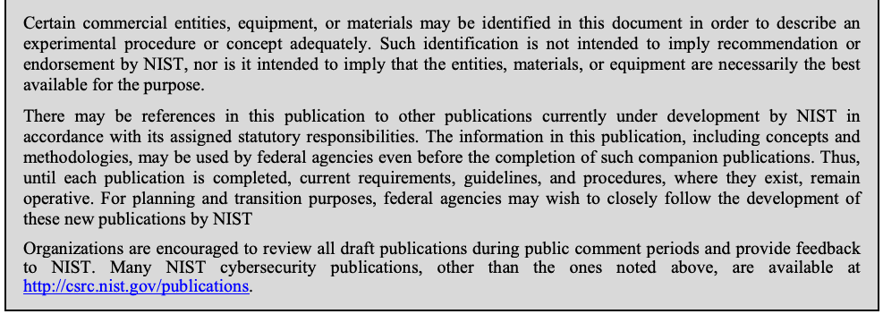

NIST Special Publication · PDF 原文抽出
Recommendation for Block Cipher Modes of Operation: Methods for Format-Preserving Encryption
フォーマット保持暗号化の方式
NIST SP 800-38G（Recommendation for Block Cipher Modes of Operation: Methods for Format-Preserving Encryption）の英文と日本語訳を段落ごとに並べた閲覧用ページです。データの記号集合と長さを保ったまま暗号化するFF1およびFF3方式を規定します。本訳は2016年8月4日の更新を含むSP 800-38G Final PDFを対象とします。 翻訳は非公式です。要件の確認にはNIST の正式版 PDFを参照してください。
PDF から抽出した原文は原本との照合待ちです。
PDF p.13: 二段組の可能性があるため読み順を原本と照合してください
PDF p.15: 二段組の可能性があるため読み順を原本と照合してください
PDF p.16: 二段組の可能性があるため読み順を原本と照合してください
NIST Special Publication 800-38G
NIST Special Publication 800-38G
未レビュー訳Recommendation for Block Cipher
ブロック暗号の運用モードに関する
未レビュー訳Modes of Operation:
推奨事項：
未レビュー訳Methods for Format-Preserving Encryption
フォーマット保持暗号化の方式
未レビュー訳Morris Dworkin
Morris Dworkin
未レビュー訳This publication is available free of charge from: http://dx.doi.org/10.6028/NIST.SP.800-38G
本書は次のURLから無料で入手できます：http://dx.doi.org/10.6028/NIST.SP.800-38G
未レビュー訳C O M P U T E R S E C U R I T Y
コンピューターセキュリティ
未レビュー訳NIST Special Publication 800-38G
NIST Special Publication 800-38G
未レビュー訳Recommendation for Block Cipher
ブロック暗号の運用モードに関する
未レビュー訳Modes of Operation:
推奨事項：
未レビュー訳Methods for Format-Preserving Encryption
フォーマット保持暗号化の方式
未レビュー訳Morris Dworkin
Morris Dworkin
未レビュー訳Computer Security Division Information Technology Laboratory
コンピューターセキュリティ部門、情報技術研究所
未レビュー訳This publication is available free of charge from: http://dx.doi.org/10.6028/NIST.SP.800-38G
本書は次のURLから無料で入手できます：http://dx.doi.org/10.6028/NIST.SP.800-38G
未レビュー訳March 2016
2016年3月
未レビュー訳INCLUDES UPDATES AS OF 08-04-2016: PAGE I
2016年8月4日付更新を含む（iページ）
未レビュー訳U.S. Department of Commerce Penny Pritzker, Secretary
米国商務省 長官 Penny Pritzker
未レビュー訳National Institute of Standards and Technology
米国国立標準技術研究所（NIST）
未レビュー訳Willie May, Under Secretary of Commerce for Standards and Technology and Director
標準技術担当商務次官兼所長 Willie May
未レビュー訳Authority
権限
未レビュー訳This publication has been developed by NIST in accordance with its statutory responsibilities under the Federal Information Security Modernization Act (FISMA) of 2014, 44 U.S.C. § 3541 et seq., Public Law (P.L.) 113-283. NIST is responsible for developing information security standards and guidelines, including minimum requirements for federal information systems, but such standards and guidelines shall not apply to national security systems without the express approval of appropriate federal officials exercising policy authority over such systems. This guideline is consistent with the requirements of the Office of Management and Budget (OMB) Circular A-130.
本書は、2014年連邦情報セキュリティ近代化法（FISMA）、合衆国法典第44編第3541条以下、ならびに公法（P.L.）113-283に基づく法定責任に従ってNISTが作成した。NISTは、連邦情報システムに対する最低要件を含む情報セキュリティ標準およびガイドラインを策定する責任を負う。ただし、適切な政策権限を行使する連邦政府職員の明示的な承認がない限り、これらの標準およびガイドラインは国家安全保障システムには適用されない。本ガイドラインは、行政管理予算局（OMB）通達A-130の要件に整合している。
未レビュー訳Nothing in this publication should be taken to contradict the standards and guidelines made mandatory and binding on federal agencies by the Secretary of Commerce under statutory authority. Nor should these guidelines be interpreted as altering or superseding the existing authorities of the Secretary of Commerce, Director of the OMB, or any other federal official. This publication may be used by nongovernmental organizations on a voluntary basis and is not subject to copyright in the United States. Attribution would, however, be appreciated by NIST.
本書のいかなる記述も、法定権限に基づき商務長官が連邦機関に義務付け、拘束力を持たせた標準およびガイドラインに反すると解釈してはならない。また、本ガイドラインは、商務長官、OMB長官、その他の連邦政府職員が既に有する権限を変更または置き換えるものと解釈してはならない。本書は非政府組織が任意に利用でき、米国内では著作権の対象とならない。ただし、NISTの出典を明記することが望ましい。
未レビュー訳National Institute of Standards and Technology Special Publication 800-38G Natl. Inst. Stand. Technol. Spec. Publ. 800-38G, 28 pages (March 2016) CODEN: NSPUE2
米国国立標準技術研究所 特別刊行物800-38G Natl. Inst. Stand. Technol. Spec. Publ. 800-38G、28ページ（2016年3月） CODEN: NSPUE2
未レビュー訳This publication is available free of charge from: http://dx.doi.org/10.6028/NIST.SP.800-38G
本書は次のURLから無料で入手できます：http://dx.doi.org/10.6028/NIST.SP.800-38G
未レビュー訳原本の表画像

Comments on this publication may be submitted to: National Institute of Standards and Technology Attn: Computer Security Division, Information Technology Laboratory 100 Bureau Drive (Mail Stop 8930) Gaithersburg, MD 20899-8930 Email: encryptionmodes@nist.gov
本書に関する意見は、次の宛先に提出できる：米国国立標準技術研究所、情報技術研究所コンピューターセキュリティ部門宛、100 Bureau Drive（Mail Stop 8930）, Gaithersburg, MD 20899-8930 メール：encryptionmodes@nist.gov
未レビュー訳NOTE: August 4, 2016 – Although it was included in the draft of 800-38G posted for public comment on July 8, 2013, the following statement was unintentionally omitted when the final version was published in March 2016:
注：2016年8月4日 — 2013年7月8日にパブリックコメント用として公開されたSP 800-38Gの草案には含まれていたものの、2016年3月の最終版の公開時に次の記述が誤って欠落していた。
未レビュー訳“It is possible that implementation of modes included in this NIST Recommendation may involve an invention covered by patent rights. By publication of this Special Publication, no position is taken with respect to the validity, scope or enforceability of any claim(s) of any such patent rights in connection with such implementation. If a patent holder has filed with NIST a Letter of Assurance (LOA) with respect to any such patent rights, a copy of that LOA may be obtained from NIST.”
「本NIST推奨事項に含まれる方式を実装する際、特許権の対象となる発明が関係する可能性がある。本特別刊行物の公開によって、そのような特許権に関する請求項の有効性、範囲、または執行可能性について、いかなる見解も示すものではない。特許権者が当該特許権に関する保証書（LOA）をNISTに提出している場合、その写しはNISTから入手できる。」
未レビュー訳Reports on Computer Systems Technology
コンピューターシステム技術に関する報告書
未レビュー訳The Information Technology Laboratory (ITL) at the National Institute of Standards and Technology (NIST) promotes the U.S. economy and public welfare by providing technical leadership for the Nation’s measurement and standards infrastructure. ITL develops tests, test methods, reference data, proof of concept implementations, and technical analyses to advance the development and productive use of information technology. ITL’s responsibilities include the development of management, administrative, technical, and physical standards and guidelines for the cost-effective security and privacy of other than national security-related information in federal information systems. The Special Publication 800-series reports on ITL’s research, guidelines, and outreach efforts in information system security, and its collaborative activities with industry, government, and academic organizations.
米国国立標準技術研究所（NIST）の情報技術研究所（ITL）は、米国の計測・標準基盤に技術的リーダーシップを提供し、米国経済と社会福祉の向上を促進している。ITLは、情報技術の発展と有効利用を推進するため、試験、試験方法、参照データ、概念実証実装、技術分析を開発する。ITLの責務には、国家安全保障に関係しない連邦情報システムの情報セキュリティとプライバシーを費用対効果よく確保するための、管理、運用、技術、物理に関する標準およびガイドラインの策定が含まれる。特別刊行物800シリーズは、情報システムセキュリティに関するITLの研究、ガイドライン、普及活動、および産業界、政府、学術機関との協働活動を報告するものである。
未レビュー訳Abstract
概要
未レビュー訳This Recommendation specifies two methods, called FF1 and FF3, for format-preserving encryption. Both of these methods are modes of operation for an underlying, approved symmetric-key block cipher algorithm.
本推奨事項は、フォーマット保持暗号化（FPE）の方式としてFF1およびFF3という2つの方式を規定する。いずれも、承認済みの対称鍵ブロック暗号アルゴリズムを基礎とする運用モードである。
未レビュー訳Keywords
キーワード
未レビュー訳Block cipher; confidentiality; encryption; FF1; FF3; format-preserving encryption; information security; mode of operation.
ブロック暗号、機密性、暗号化、FF1、FF3、フォーマット保持暗号化、情報セキュリティ、運用モード。
未レビュー訳Acknowledgements
謝辞
未レビュー訳The author gratefully acknowledges the designers of the two algorithms that are specified in this publication: 1) Mihir Bellare, Phil Rogaway, and Terence Spies; and 2) Eric Brier, Thomas Peyrin, and Jacques Stern. The author also wishes to thank his colleagues who reviewed drafts of this publication and contributed to its development, especially Elaine Barker, Lily Chen, John Kelsey, Meltem Somnez Turan, Kerry McKay, Allen Roginsky, Larry Bassham, Ray Perlner, Rene Peralta, Jim Foti, Sara Kerman, Andy Regenscheid, Bill Burr, and Tim Polk. The author also acknowledges the comments from the public and private sectors to improve the quality of this publication.
本書で規定する2つのアルゴリズムの設計者、すなわち1) Mihir Bellare、Phil Rogaway、Terence Spies、および2) Eric Brier、Thomas Peyrin、Jacques Sternに、著者は深く感謝する。また、本書の草案をレビューし、作成に貢献した同僚、とりわけElaine Barker、Lily Chen、John Kelsey、Meltem Somnez Turan、Kerry McKay、Allen Roginsky、Larry Bassham、Ray Perlner、Rene Peralta、Jim Foti、Sara Kerman、Andy Regenscheid、Bill Burr、Tim Polkに謝意を表する。さらに、本書の品質向上に寄せられた官民各部門からの意見にも感謝する。
未レビュー訳Conformance Testing
適合性試験
未レビュー訳Conformance testing for implementations of the functions that are specified in this publication will be conducted within the framework of the Cryptographic Algorithm Validation Program (CAVP) and the Cryptographic Module Validation Program (CMVP). The requirements on these implementations are indicated by the word “shall.” Some of these requirements may be out-of-scope for CAVP or CMVP validation testing, and thus are the responsibility of entities using, implementing, installing, or configuring applications that incorporate this Recommendation.
本書で規定する関数の実装に対する適合性試験は、暗号アルゴリズム検証プログラム（CAVP）および暗号モジュール検証プログラム（CMVP）の枠組みで実施される。これらの実装に関する要件は、「shall」という語で示される。一部の要件はCAVPまたはCMVPの検証試験の対象範囲外である場合があり、その場合は、本推奨事項を組み込んだアプリケーションを使用、実装、インストール、または構成する主体が責任を負う。
未レビュー訳Table of Contents
目次
未レビュー訳1 Purpose — 1
1 目的 — 1
未レビュー訳2 Introduction — 1
2 はじめに — 1
未レビュー訳3 Definitions and Notation — 2
3 定義および表記法 — 2
未レビュー訳3.1 Definitions — 2
3.1 定義 — 2
未レビュー訳3.2 Acronyms — 4
3.2 略語 — 4
未レビュー訳3.3 Operations and Functions — 5
3.3 演算および関数 — 5
未レビュー訳4 Preliminaries — 6
4 準備 — 6
未レビュー訳4.1 Representation of Character Strings — 6
4.1 文字列の表現 — 6
未レビュー訳4.2 Examples of Basic Operations and Functions — 7
4.2 基本演算および関数の例 — 7
未レビュー訳4.3 Underlying Block Cipher and Key — 8
4.3 基礎となるブロック暗号と鍵 — 8
未レビュー訳4.4 Encryption and Decryption Functions — 9
4.4 暗号化関数および復号関数 — 9
未レビュー訳4.5 Feistel Structure — 10
4.5 Feistel構造 — 10
未レビュー訳4.6 Component Functions — 11
4.6 構成関数 — 11
未レビュー訳5 Mode Specifications — 14
5 運用モードの仕様 — 14
未レビュー訳5.1 FF1 — 14
5.1 FF1 — 14
未レビュー訳5.2 FF3 — 16
5.2 FF3 — 16
未レビュー訳6 Conformance — 19
6 適合性 — 19
未レビュー訳Appendix A: Parameter Choices and Security — 20
付録A：パラメーターの選択とセキュリティ — 20
未レビュー訳Appendix B: Security Goal — 20
付録B：セキュリティ目標 — 20
未レビュー訳Appendix C: Tweaks — 21
付録C：ツイーク値 — 21
未レビュー訳Appendix D: Examples — 21
付録D：例 — 21
未レビュー訳Appendix E: References — 22
付録E：参考文献 — 22
未レビュー訳List of Figures
図一覧
未レビュー訳Figure 1: Feistel Structure — 10
図1：Feistel構造 — 10
未レビュー訳1 Purpose
1 目的
未レビュー訳This publication is the seventh part in a series of Recommendations regarding the modes of operation of block cipher algorithms. The purpose of this part is to provide approved methods for format-preserving encryption (FPE).
本書は、ブロック暗号アルゴリズムの運用モードに関する一連の推奨事項の第7部である。本編の目的は、承認済みのフォーマット保持暗号化（FPE）方式を提示することである。
未レビュー訳2 Introduction
2 はじめに
未レビュー訳A block cipher mode of operation—or simply, mode—is an algorithm for the cryptographic transformation of data that is based on a block cipher. The previously approved modes for encryption are transformations on binary data, i.e., the inputs and outputs of the modes are bit strings—sequences of ones and zeros. For sequences of non-binary symbols, however, there is no natural and general way for the previously approved modes to produce encrypted data that has the same format.
ブロック暗号の運用モード（単に「モード」ともいう）とは、ブロック暗号に基づくデータの暗号変換アルゴリズムである。従来承認されている暗号化モードは、バイナリデータを変換する。すなわち、モードへの入力と出力は、1と0の並びであるビット列である。一方、非バイナリ記号の列については、従来承認されているモードを使って元と同じ形式の暗号文を生成する一般的かつ自然な方法はない。
未レビュー訳For example, a Social Security number (SSN) consists of nine decimal numerals, so it is an integer that is less than one billion. This integer can be converted to a bit string as input to a previously approved mode, but when the output bit string is converted back to an integer, it may be greater than one billion, which would be too long for an SSN.
たとえば、社会保障番号（SSN）は9個の10進数字で構成されるため、10億未満の整数である。この整数をビット列に変換して従来承認されているモードへの入力にできるが、出力されたビット列を整数に戻すと10億を超える場合があり、その値はSSNとしては桁数が多すぎることになる。
未レビュー訳Format-preserving encryption (FPE) is designed for data that is not necessarily binary. In particular, given any finite set of symbols, like the decimal numerals, a method for FPE transforms data that is formatted as a sequence of the symbols in such a way that the encrypted form of the data has the same format, including the length, as the original data. Thus, an FPE-encrypted SSN would be a sequence of nine decimal digits.
フォーマット保持暗号化（FPE）は、必ずしもバイナリ形式ではないデータを対象とする。特に、10進数字のような有限の記号集合が与えられた場合、FPE方式は、その記号列として表現されたデータを変換し、暗号化後のデータが元データと同じ形式（長さを含む）になるようにする。したがって、FPEで暗号化したSSNも9桁の10進数字の列となる。
未レビュー訳FPE facilitates the targeting of encryption to sensitive information, as well as the retrofitting of encryption technology to legacy applications, where a conventional encryption mode might not be feasible. For example, database applications may not support changes to the length or format of data fields. FPE has emerged as a useful cryptographic tool, whose applications include financial-information security, data sanitization1, and the transparent encryption of fields in legacy databases.
FPEを利用すると、機密情報を選択的に暗号化できるほか、従来型の暗号化モードを適用できないレガシーアプリケーションにも暗号化技術を後付けしやすくなる。たとえば、データベースアプリケーションによっては、データフィールドの長さや形式の変更をサポートしていない。FPEは有用な暗号技術として普及しており、金融情報のセキュリティ、データサニタイゼーション1、レガシーデータベースにおけるフィールドの透過的な暗号化などに利用されている。
未レビュー訳The two FPE modes specified in this publication are abbreviated FF1 and FF3, to indicate that they are format-preserving, Feistel-based encryption modes. FF1 was submitted to NIST under the name FFX[Radix] in [2]. FF3 is a component of the FPE method that was submitted to NIST under the name BPS in [3]. In particular, FF3 is essentially equivalent to the BPS-BC component of BPS, instantiated with a 128-bit block cipher. The full BPS mode—in particular, its chaining mechanism for longer input strings—is not approved in this publication.
本書が規定する2つのFPEモードは、フォーマットを保持するFeistelベースの暗号化モードであることを示す「FF1」および「FF3」と略記する。FF1は[2]においてFFX[Radix]という名称でNISTに提出された。FF3は、[3]においてBPSという名称でNISTに提出されたFPE方式の構成要素である。具体的には、FF3は、128ビットブロック暗号を適用したBPSの構成要素BPS-BCと実質的に同等である。より長い入力文字列向けの連鎖機構などを含むBPSモード全体は、本書では承認されていない。
未レビュー訳A third mode, FF2—submitted to NIST under the name VAES3—was included in the initial draft of this publication. As part of the public review of Draft NIST Special Publication (SP) 800-38G and as part of its routine consultation with other agencies, NIST was advised by the National Security Agency in general terms that the FF2 mode in the draft did not provide the expected 128 bits of security strength. NIST cryptographers confirmed this assessment via the security analysis in [5] and announced the removal of FF2 in [8]. An extension of the VAES3/FF2 proposal [16] was submitted for NIST’s consideration in November 2015.
FF2という第3のモード（VAES3という名称でNISTに提出）は、本書の初版草案に含まれていた。NISTは、NIST特別刊行物（SP）800-38G草案のパブリックレビューおよび他機関との定例協議の一環として、草案のFF2モードが期待される128ビットのセキュリティ強度を提供しない旨を、国家安全保障局から一般的な形で知らされた。NISTの暗号研究者は[5]のセキュリティ分析によってこの評価を確認し、[8]でFF2の削除を公表した。VAES3/FF2提案の拡張版[16]は、2015年11月にNISTの検討に付された。
未レビュー訳Each of these FPE modes fits within a larger framework, called FFX, for constructing FPE mechanisms; FFX was submitted to NIST in [1]. The “X” indicates the flexibility to instantiate the framework with different parameter sets, as well as FFX’s evolution from its precursor, the Feistel Finite Set Encryption Mode.
これらのFPEモードはそれぞれ、FPE方式を構成するためのFFXと呼ばれる、より広い枠組みに位置付けられる。FFXは[1]でNISTに提出された。「X」は、異なるパラメーターセットを使ってこの枠組みを具体化できる柔軟性と、その前身であるFeistel有限集合暗号モードからFFXへ発展したことを表す。
未レビュー訳The FFX framework itself is not specified in this publication; in fact, FF1 and FF3 are not presented explicitly as instantiations of FFX parameter sets, but rather as separate algorithms, in order to simplify the individual specifications.
FFX枠組み自体は本書で規定していない。実際、個々の仕様を簡潔にするため、FF1およびFF3はFFXのパラメーターセットを具体化したものとして明示するのではなく、別個のアルゴリズムとして提示している。
未レビュー訳FF1 and FF3 each employ the Feistel structure—see Sec. 4.5—which also underlies the Triple Data Encryption Algorithm (TDEA) [12]. At the core of FF1 and FF3 are somewhat different Feistel round functions that are derived from an approved block cipher with 128-bit blocks, i.e., the Advanced Encryption Standard (AES) algorithm [10].
FF1およびFF3はいずれも、トリプルデータ暗号化アルゴリズム（TDEA）[12]の基礎でもあるFeistel構造（4.5節参照）を採用している。FF1およびFF3の中核となるラウンド関数は互いに多少異なるが、いずれも128ビットブロックを使用する承認済みブロック暗号、すなわちAdvanced Encryption Standard（AES）アルゴリズム[10]から導出される。
未レビュー訳In addition to the formatted data for which the modes provide confidentiality, each mode also takes an additional input called the “tweak,” which is not necessarily secret. The tweak can be regarded as a changeable part of the key, because together they determine the encryption and decryption functions. Tweaks that vary can be especially important for implementations of FPE modes, because the number of possible values for the confidential data is often relatively small, as discussed in Appendix A and Appendix C.
各モードは、機密性を提供するフォーマット付きデータに加え、「ツイーク」と呼ばれる追加入力も受け取る。ツイークは必ずしも秘密である必要はない。ツイークは鍵の変更可能な部分とみなすことができ、鍵とツイークが組み合わさって暗号化関数と復号関数を決定する。付録Aおよび付録Cで説明するように、機密データが取り得る値の数は比較的少ないことが多いため、FPEモードの実装では変化するツイークが特に重要となり得る。
未レビュー訳FF1 and FF3 offer somewhat different performance advantages. FF1 supports a greater range of lengths for the protected, formatted data, as well as flexibility in the length of the tweak. FF3 achieves greater throughput, mainly because its round count is eight, compared to ten for FF1.
FF1とFF3は、それぞれ異なる性能上の利点を持つ。FF1は、保護対象のフォーマット付きデータについて、より幅広い長さに対応し、ツイーク長にも柔軟性がある。FF3は、ラウンド数がFF1の10回に対して8回であるため、主にスループットが高い。
未レビュー訳3 Definitions and Notation
3 定義および表記法
未レビュー訳3.1 Definitions
3.1 定義
未レビュー訳alphabet
アルファベット
未レビュー訳A finite set of two or more symbols.
2個以上の記号からなる有限集合。
未レビュー訳FIPS-approved or NIST-recommended: an algorithm or technique that is
FIPS承認済みまたはNIST推奨：次のいずれかであるアルゴリズムまたは手法
未レビュー訳approved
承認されている
未レビュー訳either 1) specified in a FIPS or a NIST Recommendation, or 2) adopted in a Federal Information Processing Standard (FIPS) or a NIST Recommendation.
すなわち、1) FIPSまたはNIST勧告に規定されている、または2) 連邦情報処理規格（FIPS）もしくはNIST勧告に採用されている。
未レビュー訳base
基数
未レビュー訳The number of characters in a given alphabet. The base is denoted by radix.
所与のアルファベットに含まれる文字の数。基数はradixで表される。
未レビュー訳A binary digit: 0 or 1.
2進数字：0または1。
未レビュー訳bit
ビット
未レビュー訳bit string
ビット列
未レビュー訳A finite, ordered sequence of bits.
ビットの有限な順序列。
未レビュー訳For a given block cipher, a bit string whose length is the block size of the
所与のブロック暗号に対して、長さがブロックサイズに等しいビット列
未レビュー訳block
ブロック
未レビュー訳block cipher.
ブロック暗号。
未レビュー訳A parameterized family of permutations on bit strings of a fixed length; the
固定長のビット列上の置換からなるパラメーター化された族。その
未レビュー訳block cipher
ブロック暗号
未レビュー訳parameter that determines the permutation is a bit string called the key.
置換を決定するパラメーターは、鍵と呼ばれるビット列である。
未レビュー訳block cipher
ブロック暗号
未レビュー訳An algorithm for the cryptographic transformation of data that is based on a
データの暗号変換を行うアルゴリズムであり、次に基づく
未レビュー訳mode of
モード
未レビュー訳block cipher.
ブロック暗号。
未レビュー訳operation
動作
未レビュー訳For a given block cipher and key, the fixed length of the input (or output) bit
所与のブロック暗号および鍵に対して、入力（または出力）ビット列の固定長
未レビュー訳block size
ブロックサイズ
未レビュー訳strings.
列。
未レビュー訳A bit string whose length is a multiple of a given block size, so that it can be
所与のブロックサイズの倍数の長さを持つビット列であり、次のように
未レビュー訳block string
ブロック列
未レビュー訳represented as the concatenation of a finite sequence of blocks.
有限個のブロックを連結したものとして表現できる。
未レビュー訳byte
バイト
未レビュー訳A string of eight bits.
8ビットの列。
未レビュー訳A bit string whose length is a multiple of eight bits, so that it can be
長さが8ビットの倍数であるビット列であり、次のように
未レビュー訳byte string
バイト列
未レビュー訳represented as the concatenation of a finite sequence of bytes.
有限個のバイトを連結したものとして表現できる。
未レビュー訳character
文字
未レビュー訳A symbol in a given alphabet.
所与のアルファベットに含まれる記号。
未レビュー訳character string A finite, ordered sequence of characters from a given alphabet.
文字列 所与のアルファベットの文字からなる有限の順序列。
未レビュー訳In this publication, the numeral string that is the encrypted form of a plaintext
本書では、平文を暗号化した形式である数字列
未レビュー訳ciphertext
暗号文
未レビュー訳numeral string.
数字列。
未レビュー訳For a given block cipher and key, the function of an FPE mode that takes a
所与のブロック暗号および鍵に対して、平文を受け取るFPEモードの関数
未レビュー訳decryption
復号
未レビュー訳ciphertext numeral string and a tweak as input and returns the corresponding
暗号文数字列と tweak を入力として受け取り、対応する
未レビュー訳function
関数
未レビュー訳plaintext numeral string as output.
平文数字列を出力として返す。
未レビュー訳designated
指定された
未レビュー訳For a given block cipher and key, the choice of either the forward
所与のブロック暗号および鍵について、順方向
未レビュー訳cipher function transformation or the inverse transformation.
暗号関数変換または逆変換のいずれかを選択すること。
未レビュー訳For a given block cipher and key, the function of an FPE mode that takes a
所与のブロック暗号について、FPE モードのうち、
未レビュー訳encryption
暗号化
未レビュー訳plaintext numeral string and a tweak as input and returns a ciphertext numeral
平文数字列と tweak を入力として受け取り、暗号文数字
未レビュー訳function
関数
未レビュー訳string as output.
列を出力として返すもの。
未レビュー訳exclusive-OR
排他的論理和
未レビュー訳The bitwise addition, modulo 2, of two bit strings of equal length.
長さが等しい二つのビット列について、ビット単位で加算し、2 を法として演算した結果。
未レビュー訳(XOR)
(XOR)
未レビュー訳A framework for constructing an encryption mode. The framework consists of several iterations, called rounds, in which a keyed function, called the
暗号化モードを構成するための枠組み。この枠組みはいくつかの反復 (ラウンドと呼ぶ) からなり、鍵付き関数 (
未レビュー訳Feistel structure
Feistel 構造
未レビュー訳round function, is applied to one part of the data in order to modify the other part of the data; the roles of the two parts are swapped for the next round.
ラウンド関数と呼ぶ) をデータの一方の部分に適用して他方の部分を変更する。次のラウンドでは、二つの部分の役割を入れ替える。
未レビュー訳forward
順方向
未レビュー訳For a given block cipher, the permutation of blocks that is determined by the
所与のブロック暗号について、鍵の
未レビュー訳transformation choice of a key. inverse
変換 選択によって定まるブロックの置換。逆
未レビュー訳For a given block cipher, the inverse of the permutation of blocks that is
所与のブロック暗号について、ブロックの置換の逆であり、
未レビュー訳transformation determined by the choice of a key.
変換 鍵の選択によって定まる。
未レビュー訳For a given block cipher, the secret bit string that parameterizes the
所与のブロック暗号について、
未レビュー訳key
鍵
未レビュー訳permutation.
置換をパラメーター化する秘密ビット列。
未レビュー訳mode
モード
未レビュー訳See block cipher mode of operation.
ブロック暗号の動作モードを参照。
未レビュー訳numeral
数字
未レビュー訳For a given base, a nonnegative integer less than the base.
所与の基数について、基数未満の非負整数。
未レビュー訳numeral string For a given base, a finite, ordered sequence of numerals for the base.
数字列 所与の基数について、その基数の数字を有限個、順序付けて並べた列。
未レビュー訳In this publication, a numeral string whose confidentiality is protected by an
本文書では、機密性が FPE モードによって保護される
未レビュー訳plaintext
平文
未レビュー訳FPE mode.
数字列。
未レビュー訳A required input to an algorithm that has been established prior to the
アルゴリズムの呼出しに先立って確立される、アルゴリズムへの必須入力。
未レビュー訳prerequisite
前提条件
未レビュー訳invocation of the algorithm.
アルゴリズムの呼出し。
未レビュー訳shall
shall
未レビュー訳Is required to. Requirements apply to conforming implementations.
必須である。要求事項は適合実装に適用される。
未レビュー訳should
should
未レビュー訳Is recommended to.
推奨される。
未レビュー訳The input parameter to the encryption and decryption functions whose
暗号化関数および復号関数への入力パラメーターであり、その
未レビュー訳tweak
tweak
未レビュー訳confidentiality is not necessarily protected by the mode.
機密性は当該モードによって必ずしも保護されない。
未レビュー訳3.2 Acronyms
3.2 頭字語
未レビュー訳AES
AES
未レビュー訳Advanced Encryption Standard.
Advanced Encryption Standard（高度暗号化標準）。
未レビュー訳CAVP
CAVP
未レビュー訳Cryptographic Algorithm Validation Program.
Cryptographic Algorithm Validation Program（暗号アルゴリズム検証プログラム）。
未レビュー訳CCN
CCN
未レビュー訳credit card number.
クレジットカード番号。
未レビュー訳CMVP
CMVP
未レビュー訳Cryptographic Module Validation Program.
Cryptographic Module Validation Program（暗号モジュール検証プログラム）。
未レビュー訳FIPS
FIPS
未レビュー訳Federal Information Processing Standard.
Federal Information Processing Standard（連邦情報処理規格）。
未レビュー訳FISMA
FISMA
未レビュー訳Federal Information Security Management Act.
Federal Information Security Management Act（連邦情報セキュリティ管理法）。
未レビュー訳FPE
FPE
未レビュー訳format-preserving encryption.
format-preserving encryption（形式保存暗号化）。
未レビュー訳IETF
IETF
未レビュー訳Internet Engineering Task Force.
Internet Engineering Task Force（インターネット技術タスクフォース）。
未レビュー訳ITL
ITL
未レビュー訳Information Technology Laboratory.
Information Technology Laboratory（情報技術研究所）。
未レビュー訳NIST
NIST
未レビュー訳National Institute of Standards and Technology.
National Institute of Standards and Technology（米国国立標準技術研究所）。
未レビュー訳PRF
PRF
未レビュー訳pseudorandom function.
疑似ランダム関数。
未レビュー訳RFC
RFC
未レビュー訳Request For Comment.
Request For Comment（コメント募集文書）。
未レビュー訳SSN
SSN
未レビュー訳Social Security number.
社会保障番号。
未レビュー訳3.3 Operations and Functions
3.3 操作および関数
未レビュー訳Examples of most of the following operations and functions are provided in Sec. 4.2.
以下の操作および関数の大部分について、例を4.2節に示す。
未レビュー訳BYTELEN(X) The number of bytes in a byte string, X.
BYTELEN(X) バイト列Xに含まれるバイト数。
未レビュー訳The output of the designated cipher function of the block cipher under the key
鍵Kを用いてブロックXに適用される、ブロック暗号の指定暗号関数の出力
未レビュー訳CIPHK (X)
CIPHK (X)
未レビュー訳K applied to the block X.
。
未レビュー訳LEN(X)
LEN(X)
未レビュー訳The number of numerals [or bits] in a numeral string [or bit string] X.
数字列X［またはビット列X］に含まれる数字［またはビット］の数。
未レビュー訳LOG(x)
LOG(x)
未レビュー訳The base 2 logarithm of the real number x > 0.
実数 x > 0 の底 2 の対数。
未レビュー訳The integer that a bit string X represents when the bits are valued in
ビット列 X が表す整数。各ビットの値は、
未レビュー訳NUM(X)
NUM(X)
未レビュー訳decreasing order of significance.
有意度の高い順に並べたものとする。
未レビュー訳The number that the numeral string X represents in base radix when the
数字列 X が基数 radix で表す数。各数字は、
未レビュー訳NUMradix(X)
NUMradix(X)
未レビュー訳numerals are valued in decreasing order of significance.
有意度の高い順に並べたものとする。
未レビュー訳The output of the function PRF applied to the block X; PRF is defined in terms
ブロック X に PRF 関数を適用した出力。PRF は、
未レビュー訳PRF(X)
PRF(X)
未レビュー訳of a given designated cipher function.
所与の指定暗号関数に基づいて定義される。
未レビュー訳Given a numeral string, X, the numeral string that consists of the numerals of
数字列 X が与えられたとき、X の数字を逆順に並べた
未レビュー訳REV(X)
REV(X)
未レビュー訳X in reverse order.
数字列。
未レビュー訳Given a byte string, X, the byte string that consists of the bytes of X in reverse
バイト列 X が与えられたとき、X のバイトを逆順に並べた
未レビュー訳REVB(X)
REVB(X)
未レビュー訳order.
バイト列。
未レビュー訳Given a nonnegative integer x less than radixm, the representation of x as a
radixm 未満の非負整数 x を、
未レビュー訳m STR (x) radix
m STR (x) radix
未レビュー訳string of m numerals in base radix, in decreasing order of significance.
基数 radix の m 個の数字からなる文字列として表したもの。有意度の高い順に並べる。
未レビュー訳⌊x⌋
⌊x⌋
未レビュー訳The greatest integer that does not exceed the real number x.
実数 x を超えない最大の整数。
未レビュー訳The least integer that is not less than the real number x.
実数 x 以上である最小の整数。
未レビュー訳⎡x⎤
⎡x⎤
未レビュー訳Given a nonnegative integer x less than 256s, the representation of x as a
256s 未満の非負整数 x を、
未レビュー訳[x]s
[x]s
未レビュー訳string of s bytes.
s バイトからなる文字列として表したもの。
未レビュー訳[i..j]
[i..j]
未レビュー訳The set of integers between two integers i and j, including i and j. x mod m
両端の整数 i および j を含む、i と j の間にある整数の集合。 x mod m
未レビュー訳The nonnegative remainder of the integer x modulo the positive integer m.
正の整数 m を法として整数 x を割ったときの、非負の剰余。
未レビュー訳The ith element of the string X.
文字列 X の i 番目の要素。
未レビュー訳X[i]
X[i]
未レビュー訳X[i..j]
X[i..j]
未レビュー訳The substring of the string X from X[i] to X[j], including X[i] and X[j].
文字列 X の X[i] から X[j] までの部分文字列。X[i] と X[j] を含む。
未レビュー訳The bitwise exclusive-OR of bit strings X and Y whose bit lengths are equal.
ビット長が等しいビット列 X および Y のビット単位排他的論理和。
未レビュー訳X ⊕ Y
X ⊕ Y
未レビュー訳X || Y
X || Y
未レビュー訳The concatenation of numeral strings X and Y.
数字列 X と Y の連結。
未レビュー訳0s
未レビュー訳The bit string that consists of s consecutive ‘0’ bits.
連続する ‘0’ ビットを s 個並べたビット列。
未レビュー訳4 Preliminaries
4 予備事項
未レビュー訳4.1 Representation of Character Strings
4.1 文字列の表現
未レビュー訳The data inputs and outputs for FF1 and FF3 are sequences of numbers that can represent both numeric and non-numeric data, as discussed below.
FF1およびFF3のデータ入力と出力は、以下で説明するとおり、数値データと非数値データの両方を表現できる数列である。
未レビュー訳A finite set of two or more symbols is called an alphabet. The symbols in an alphabet are called the characters of the alphabet. The number of characters in an alphabet is called the base, denoted by radix; thus, radix ≥ 2.
2個以上の記号からなる有限集合をアルファベットと呼ぶ。アルファベットに含まれる記号を、そのアルファベットの文字と呼ぶ。アルファベットに含まれる文字の数を基数と呼び、radixで表す。したがって、radix ≥ 2である。
未レビュー訳A character string is a finite sequence of characters from an alphabet; individual characters may repeat in the string. In this publication, character strings (and bit strings) are presented in the Courier New font.
文字列は、あるアルファベットに属する文字の有限列である。個々の文字は文字列内で繰り返し現れてもよい。本書では、文字列（およびビット列）をCourier Newフォントで示す。
未レビュー訳Thus, for the alphabet of lower-case English letters,
したがって、小文字の英字からなるアルファベットは、
未レビュー訳{a, b, c, d, e, f, g, h, i, j, k, l, m, n, o, p, q, r, s, t, u, v, w, x, y, z},
{a, b, c, d, e, f, g, h, i, j, k, l, m, n, o, p, q, r, s, t, u, v, w, x, y, z},
未レビュー訳hello and cannot are character strings, but Hello and can’t are not, because the symbols “H” and “ ’ ” are not in the alphabet.
helloおよびcannotは文字列であるが、Helloおよびcan’tは文字列ではない。記号「H」および「 ’ 」がアルファベットに含まれないためである。
未レビュー訳SSNs or CCNs can be regarded as character strings in the alphabet of base ten numerals, namely, {0, 1, 2, 3, 4, 5, 6, 7, 8, 9}. The notion of numerals is generalized to any given base as follows: the set of base radix numerals is
SSNまたはCCNは、基数10の数字からなるアルファベット、すなわち{0, 1, 2, 3, 4, 5, 6, 7, 8, 9}の文字列とみなすことができる。数字の概念を任意の基数に一般化すると、基数radixの数字の集合は次のとおりである：
未レビュー訳{0, 1, …, radix-1}.
{0, 1, …, radix-1}.
未レビュー訳The data inputs and outputs to the FF1 and FF3 encryption and decryption functions must be finite sequences of numerals, i.e., numeral strings. If the data to be encrypted is formatted in an alphabet that is not already the set of base radix numerals, then each character must be represented by a distinct numeral in order to apply FF1 or FF3.
FF1およびFF3の暗号化関数と復号関数へのデータ入力および出力は、有限個の数字、すなわち数字列でなければならない。暗号化対象のデータが、基数radixの数字集合ではないアルファベットで形式化されている場合、FF1またはFF3を適用するには、各文字をそれぞれ異なる数字で表さなければならない。
未レビュー訳For example, the natural representation of lower-case English letters with base 26 numerals is
例えば、小文字の英字を基数26の数字で自然に表すと、
未レビュー訳a→0, b→1, c→2, … x→23, y→24, z→25.
a→0, b→1, c→2, … x→23, y→24, z→25.
未レビュー訳The character string hello would then be represented by the numeral string 7 4 11 11 14. Other representations are possible.
この場合、文字列helloは数字列7 4 11 11 14で表される。他の表現も可能である。
未レビュー訳The choice and implementation of a one-to-one correspondence between a given alphabet and the set of base radix numerals that represents the alphabet is outside the scope of this publication.
所与のアルファベットと、そのアルファベットを表す基数radixの数字集合との間に一対一対応を選択し、実装することは、本書の適用範囲外である。
未レビュー訳In this publication, individual numerals are themselves represented in base ten. In order to display numeral sequences unambiguously when the base is greater than ten, a delimiter between the numerals is required, such as a space (as in the base 26 example above) or a comma.
本書では、個々の数字自体を基数10で表す。基数が10を超える場合に数字列を曖昧さなく表示するには、数字間に区切り文字が必要であり、例えば空白（上述の基数26の例のように）またはコンマを使用する。
未レビュー訳FF1 and FF3 use different conventions for interpreting numeral strings as numbers. For FF1, numbers are represented by strings of numerals with decreasing order of significance; for FF3, numbers are represented by strings of numerals in the reverse order, i.e., with increasing order of significance. Algorithms for the functions that convert numeral strings to numbers and vice versa are given in Sec. 4.6.
FF1とFF3では、数字列を数値として解釈する規約が異なる。FF1では、数値は有効桁の降順で並ぶ数字列で表される。FF3では、逆順、すなわち有効桁の昇順で並ぶ数字列で表される。数字列を数値に変換する関数およびその逆変換を行う関数のアルゴリズムを4.6節に示す。
未レビュー訳4.2 Examples of Basic Operations and Functions
4.2 基本演算および関数の例
未レビュー訳Given a positive real number x, the base 2 logarithm of x, denoted by LOG(x), is the unique real number for which 2LOG(x) = x. For example, LOG(64) = 6 and LOG(10) ≈ 3.32.
正の実数xに対して、xの底2の対数をLOG(x)で表し、2LOG(x) = xを満たす一意の実数とする。例えば、LOG(64) = 6およびLOG(10) ≈ 3.32である。
未レビュー訳Given a real number x, the floor function, denoted by ⌊x⌋, is the greatest integer that does not exceed x. For example, ⌊2.1⌋ = 2, and ⌊4⌋ = 4.
実数xに対して、床関数を⌊x⌋で表し、xを超えない最大の整数とする。例えば、⌊2.1⌋ = 2および⌊4⌋ = 4である。
未レビュー訳Given a real number x, the ceiling function, denoted by ⎡x⎤, is the least integer that is not less than x. For example, ⎡2.1⎤ = 3, and ⎡4⎤ = 4.
実数xに対して、天井関数を⎡x⎤で表し、x以上となる最小の整数とする。例えば、⎡2.1⎤ = 3および⎡4⎤ = 4である。
未レビュー訳Given two integers i and j with i≤j, the set of integers between i and j, including i and j, is denoted by [i..j]. For example, [2..5] = {2, 3, 4, 5}.
i≤jである2つの整数iおよびjに対し、iとjを含む、iからjまでの整数の集合を[i..j]で表す。例えば、[2..5] = {2, 3, 4, 5}である。
未レビュー訳Given a real number x and a positive integer m, the remainder of x modulo m, denoted by x mod m, is x–m⌊x/m⌋. For example, -3 mod 7 = 4, and 13 mod 7 = 6.
実数xおよび正の整数mに対して、xをmで割った余りをx mod mで表し、x–m⌊x/m⌋とする。例えば、-3 mod 7 = 4および13 mod 7 = 6である。
未レビュー訳Given a positive integer s, 0s denotes the string that consists of s ‘0’ bits. For example, 08 = 00000000.
正の整数sに対し、0sはs個の「0」ビットからなる文字列を表す。例えば、08 = 00000000である。
未レビュー訳The concatenation operation on bit strings or numeral strings is denoted by ||. For example, 001 || 1011 = 0011011, and 3 1 || 31 8 10 = 3 1 31 8 10.
ビット列または数字列の連結演算を||で表す。例えば、001 || 1011 = 0011011、および3 1 || 31 8 10 = 3 1 31 8 10である。
未レビュー訳Given bit strings of equal length, the exclusive-OR (XOR) operation, denoted by ⊕, specifies the addition, modulo 2, of the bits in corresponding bit positions. For example, 10011 ⊕ 10101 = 00110.
同じ長さのビット列に対する排他的論理和（XOR）演算を⊕で表し、対応するビット位置のビットを法2で加算する演算とする。例えば、10011 ⊕ 10101 = 00110である。
未レビュー訳Given a numeral or bit string X, its length is denoted by LEN(X). For example, LEN(010) = 3.
数字列またはビット列Xの長さをLEN(X)で表す。例えば、LEN(010) = 3である。
未レビュー訳Given a byte string X—i.e., a bit string that could be represented as the concatenation of a sequence of bytes—the length of X in bytes, i.e., LEN(X)/8, is denoted by BYTELEN(X). For example, BYTELEN(1011100110101100) = 2.
バイト列X、すなわちバイト列の連結として表現できるビット列に対して、Xのバイト単位の長さ、すなわちLEN(X)/8をBYTELEN(X)で表す。例えば、BYTELEN(1011100110101100) = 2である。
未レビュー訳Given a numeral [bit] string X and an index i such that 1 ≤ i ≤ LEN(X), the ith numeral [bit] of X is denoted by X[i]. For a pair of indices (i,j), with 1 ≤ i ≤ j ≤ LEN(X), the substring of numerals [bits] from X[i] to X[j] is denoted by X[i..j]. For example, in base ten, if X = 798137, then X[2] = 9, and X[3..5] = 813.
数字［またはビット］列Xおよび1 ≤ i ≤ LEN(X)を満たす添字iに対して、Xのi番目の数字［またはビット］をX[i]で表す。1 ≤ i ≤ j ≤ LEN(X)を満たす添字の組(i,j)に対して、X[i]からX[j]までの数字［またはビット］の部分列をX[i..j]で表す。例えば、基数10でX = 798137の場合、X[2] = 9およびX[3..5] = 813である。
未レビュー訳Given a base, radix, and a length, m, there are radixm distinct numeral strings. Given an integer x such that 0 ≤ x < radixm, the integer-to-string function, denoted by STRm
基数radixおよび長さmが与えられると、radixm個の異なる数字列がある。0 ≤ x < radixmを満たす整数xに対し、整数から文字列への関数をSTRm
未レビュー訳(x), is the numeral radix
(x)で表し、基数radixの数字
未レビュー訳string of length m in base radix that represents x, when the numerals are in decreasing order of
列であり、基数radixで長さm、xを表し、数字が有効桁の降順に並ぶ
未レビュー訳4
未レビュー訳significance. For example, STR (559) is the string of four numerals in base 12 that represents
の順である。例えば、STR (559)は、基数12の4個の数字からなる文字列で、559を表す
未レビュー訳12
未レビュー訳m
未レビュー訳559, namely, 0 3 10 7. An algorithm for computing STR (x) is given in Sec. 4.6.
559、すなわち0 3 10 7である。STR (x)を計算するアルゴリズムを4.6節に示す。
未レビュー訳radix
radix
未レビュー訳A separate notation is given for the conversion of integers to byte strings, in particular, [x]s = STR8s (x). For example, [1]1=00000001.
整数からバイト列への変換には別の表記法を用いる。特に、[x]s = STR8s (x)である。例えば、[1]1=00000001である。
未レビュー訳2
未レビュー訳Given a (non-empty) numeral string X in base radix of length m, the string-to-integer function,
基数radix、長さmの（空でない）数字列Xが与えられると、文字列から整数への関数、
未レビュー訳m
未レビュー訳denoted by NUMradix(X), is the integer x that X represents, so that STRradix (x) = X. For example, NUM5 (00011010)=755. An algorithm for computing NUMradix(X) is given in Sec. 4.6.
NUMradix(X)で表される整数xであり、Xが表す値である。したがって、STRradix (x) = Xとなる。例えば、NUM5 (00011010)=755である。NUMradix(X)を計算するアルゴリズムを4.6節に示す。
未レビュー訳Similar notation is given for the function that converts bit strings to integers. In particular, given a byte string X, NUM(X) is the integer x that X represents, so that [NUM(X)]BYTELEN(X) = X. For example, NUM(10000000)=128. An algorithm for computing NUM(X) is given in Sec. 4.6.
ビット列を整数に変換する関数についても同様の表記法を用いる。特に、バイト列Xに対して、NUM(X)はXが表す整数xであり、[NUM(X)]BYTELEN(X) = Xとなる。例えば、NUM(10000000)=128である。NUM(X)を計算するアルゴリズムを4.6節に示す。
未レビュー訳Given a numeral string, X, the string REV(X) is the sequence of numerals of X in reverse order. For example, in base ten, REV(13579) = 97531.
数字列Xに対して、文字列REV(X)はXの数字を逆順に並べた列である。例えば、基数10では、REV(13579) = 97531である。
未レビュー訳Given a byte string, X, the string REVB(X) is the sequence of bytes of X in reverse order. For example, REVB([1]||[2]||[3])=[3]||[2]||[1].
バイト列Xに対して、文字列REVB(X)はXのバイトを逆順に並べた列である。例えば、REVB([1]||[2]||[3])=[3]||[2]||[1]である。
未レビュー訳4.3 Underlying Block Cipher and Key
4.3 基礎となるブロック暗号および鍵
未レビュー訳The encryption and decryption functions of FF1 and FF3 feature a block cipher as the main component; thus, each of these FPE mechanisms is a mode of operation (mode, for short) of the block cipher.
FF1およびFF3の暗号化関数と復号関数では、ブロック暗号が主要な構成要素となる。したがって、各FPE方式は、そのブロック暗号の動作モード（以下、モード）である。
未レビュー訳For any given key, K, the underlying block cipher of the mode is a permutation, i.e., an invertible transformation on bit strings of a fixed length; the fixed-length bit strings are called blocks, and the length of a block is called the block size. For an FPE mode, as part of the choice of the underlying block cipher with the key, either the forward transformation or the inverse transformation2 is specified as the designated cipher function, denoted by CIPH . The inverse of
任意の鍵Kについて、モードの基礎となるブロック暗号は置換、すなわち固定長ビット列上の可逆変換である。この固定長ビット列をブロックと呼び、ブロックの長さをブロックサイズと呼ぶ。FPEモードでは、鍵とともに基礎となるブロック暗号を選択する際、順変換または逆変換2のいずれかを指定暗号関数として指定し、CIPHで表す。この逆関数
未レビュー訳K
未レビュー訳CIPH is not needed for the modes that are specified in this publication. K
CIPHは、本書で規定するモードでは必要ない。K
未レビュー訳For both of the modes, the underlying block cipher shall be approved, and the block size shall be 128 bits. Currently, the AES block cipher [10], with key lengths of 128, 192, or 256 bits, is the only block cipher that fits this profile.
両モードにおいて、基礎となるブロック暗号は承認済みでなければならず、ブロックサイズは128ビットでなければならない。現在、この要件に適合するブロック暗号は、鍵長が128、192または256ビットのAESブロック暗号[10]のみである。
未レビュー訳The choice of the key length affects the security of the FPE modes, e.g., against brute-force search, and also affects the details of the implementation of the AES algorithm. Otherwise, the key length does not affect the implementation of FF1 and FF3, and the choice of the key length is not explicitly indicated in their specifications. Methods for generating cryptographic keys are discussed in [13]; the goal is to select the keys uniformly at random, i.e., for each possible key to occur with equal probability.
鍵長の選択は、例えば総当たり探索に対するFPEモードの安全性に影響し、AESアルゴリズムの実装の詳細にも影響する。それ以外では、鍵長はFF1およびFF3の実装に影響せず、鍵長の選択はそれらの仕様に明示されていない。暗号鍵の生成方法は[13]で論じられている。目的は鍵を一様ランダムに選択すること、すなわち、各鍵が等しい確率で選ばれるようにすることである。
未レビュー訳The key shall be kept secret, i.e., disclosed only to parties that are authorized to know the protected information. Compliance with this requirement is the responsibility of the entities using, implementing, installing, or configuring applications that incorporate the functions that are specified in this publication. The management of cryptographic keys is outside the scope of this publication.
鍵は秘密に保たなければならない。すなわち、保護対象情報を知る権限を与えられた当事者にのみ開示する。本要件への準拠は、本書に規定された関数を組み込むアプリケーションを使用、実装、設置または構成するエンティティの責任である。暗号鍵の管理は本書の適用範囲外である。
未レビュー訳4.4 Encryption and Decryption Functions
4.4 暗号化関数および復号関数
未レビュー訳For a given key, denoted by K, for the designated block cipher, FF1 and FF3 each consist of two related functions: encryption and decryption. The inputs to the encryption function are a numeral string called the plaintext, denoted by X, and a byte string, called the tweak, denoted by T; the function returns a numeral string called the ciphertext, denoted by Y, with the same length as X. Similarly, the inputs to the decryption function are a numeral string X and a tweak T; the output is a numeral string Y of the same length as X.
指定ブロック暗号の所与の鍵Kに対して、FF1およびFF3はそれぞれ、相互に関連する2つの関数、すなわち暗号化と復号からなる。暗号化関数への入力は、平文と呼ばれXで表される数字列、およびtweakと呼ばれTで表されるバイト列である。この関数は、Xと同じ長さの数字列を返し、これを暗号文と呼びYで表す。同様に、復号関数への入力は数字列Xとtweak Tであり、出力はXと同じ長さの数字列Yである。
未レビュー訳For FF1, the encryption function is denoted by FF1.Encrypt(K, T, X), and the decryption function is denoted by FF1.Decrypt(K, T, X), with analogous notation for FF3.
FF1では暗号化関数をFF1.Encrypt(K, T, X)、復号関数をFF1.Decrypt(K, T, X)で表す。FF3についても同様の表記を用いる。
未レビュー訳For a given tweak, the decryption function is the inverse of the encryption function, so that
tweakが所与の場合、復号関数は暗号化関数の逆関数である。したがって、
未レビュー訳FF1.Decrypt(K, T, FF1.Encrypt(K, T, X)) = X, FF3.Decrypt(K, T, FF3.Encrypt(K, T, X)) = X.
FF1.Decrypt(K, T, FF1.Encrypt(K, T, X)) = X, FF3.Decrypt(K, T, FF3.Encrypt(K, T, X)) = X.
未レビュー訳Thus, when a ciphertext is an input to the decryption function, along with the same tweak that was used to generate the ciphertext, the output is the corresponding plaintext.
したがって、暗号文を生成時と同じtweakとともに復号関数に入力すると、対応する平文が出力される。
未レビュー訳The tweak does not need to be kept secret; often, it is some readily available data that is associated with the plaintext. Although implementations may fix the value of the tweak, the use of variable tweaks is strongly recommended as a security enhancement; see Appendix C. In FF1 and FF3, tweaks are byte strings. The specifications in Sec. 5 include the lengths that can be supported for the tweak, as well as for the plaintext/ciphertext.
tweakを秘密にする必要はない。多くの場合、平文に関連付けられた容易に入手できるデータである。実装でtweakの値を固定してもよいが、セキュリティ強化のため、可変tweakの使用を強く推奨する。付録Cを参照。FF1およびFF3では、tweakはバイト列である。5節の仕様には、tweakおよび平文／暗号文についてサポート可能な長さも含まれる。
未レビュー訳The key, K, is indicated in the above notation as an input for the encryption and decryption functions; however, in the specifications in this publication, the key is listed as a prerequisite, i.e., an input that is usually established prior to the invocation of the function.3 Several other prerequisites are omitted from the above notation, such as the underlying block cipher, the designation of CIPH , and the base for the numeral strings.
上記の表記では、鍵Kを暗号化関数および復号関数の入力として示している。ただし、本書の仕様では、鍵は前提条件、すなわち通常は関数の呼出し前に確立される入力として記載する。3 基礎となるブロック暗号、CIPHの指定、数字列の基数など、その他いくつかの前提条件は上記表記から省略されている。
未レビュー訳K
未レビュー訳4.5 Feistel Structure
4.5 Feistel構造
未レビュー訳FFX schemes, including FF1 and FF3, are based on the Feistel structure. The Feistel structure consists of several iterations, called rounds, of a reversible transformation. The transformation consists of three steps: 1) the data is split into two parts; 2) a keyed function, called the round function, is applied to one part of the data in order to modify the other part of the data; and 3) the roles of the two parts are swapped for the next round. The structure is illustrated in Figure 1 below, for both encryption and decryption. Four rounds are shown in Figure 1, but ten rounds are actually specified for FF1, and eight rounds for FF3.
FF1およびFF3を含むFFX方式は、Feistel構造に基づく。Feistel構造は、可逆変換を複数回反復する構成であり、各反復をラウンドと呼ぶ。この変換は3つのステップからなる：1) データを2つの部分に分割する、2) ラウンド関数と呼ばれる鍵付き関数をデータの一方の部分に適用し、もう一方の部分を変更する、3) 次のラウンドに向けて2つの部分の役割を入れ替える。この構造を、暗号化と復号の両方について以下の図1に示す。図1には4ラウンドを示すが、FF1では実際には10ラウンド、FF3では8ラウンドが規定されている。
未レビュー訳u!characters! v!characters!
u!characters! v!characters!
未レビュー訳u!characters! v!characters!
u!characters! v!characters!
未レビュー訳| A ! 0 | B ! 0 |
| A ! 4! | B ! 4 |
n,!T,!0!
n,!T,!0!
未レビュー訳n,!T,!3!
n,!T,!3!
未レビュー訳_!
未レビュー訳+! F !
+! F !
未レビュー訳F !
F !
未レビュー訳K
未レビュー訳K
未レビュー訳| B ←!C ! 1! 0 | A ←!B ! 1! 0 |
| B ←!A ! 3! 4 | A ! 3! |
n,!T,!1!
n,!T,!1!
未レビュー訳n,!T,!2!
n,!T,!2!
未レビュー訳_!
未レビュー訳F ! +!
F ! +!
未レビュー訳F !
F !
未レビュー訳K
未レビュー訳K
未レビュー訳| A ←!B ! 2! 1 | B ←!C ! 2! 1 |
| A ! 2! | B ←!A ! 2! 3 |
n,!T,!1!
n,!T,!1!
未レビュー訳n,!T,!2!
n,!T,!2!
未レビュー訳_!
未レビュー訳F !
F !
未レビュー訳+! F !
+! F !
未レビュー訳K
未レビュー訳K
未レビュー訳| B ←!C ! 3! 2 | A ←!B ! 3! 2 |
| B ←!A ! 1! 2 | A ! 1 |
n,!T,!3!
n,!T,!3!
未レビュー訳n,!T,!0!
n,!T,!0!
未レビュー訳_!
未レビュー訳F ! +!
F ! +!
未レビュー訳F !
F !
未レビュー訳K
未レビュー訳K
未レビュー訳| A ←!B ! 4! 3 | B ←!C ! 4! 3 |
| A ! 0 | B ←!A ! 0! 1 |
Encryption!
暗号化!
未レビュー訳Decryption!
復号!
未レビュー訳Figure 1: Feistel Structure
図 1: Feistel 構造
未レビュー訳For the encryption function in Figure 1, the rounds are indexed from 0 to 3. The input data (and output data) for each round are two strings of characters—which will be numerals for FF1 and FF3. The lengths of the two strings are denoted by u and v, and the total number of characters is denoted by n, so that u+v = n. During Round i, the round function, denoted by F , is applied to
図 1 の暗号化関数では、ラウンドに 0 から 3 までの番号が付けられる。各ラウンドの入力データ (および出力データ) は二つの文字列であり、FF1 と FF3 では数字列となる。二つの文字列の長さを u および v、文字の総数を n と表す。したがって u+v = n である。ラウンド i では、F と表記するラウンド関数が次に適用される。
未レビュー訳F_K
未レビュー訳one of the input strings, denoted by B , with the length n, the tweak T, and the round number i as
入力文字列の一方 (B と表記し、長さは n)、tweak T、およびラウンド番号 i を
未レビュー訳i
未レビュー訳additional inputs. (In Figure 1, this triple (n, T, i) of additional inputs is indicated within the dotted rectangles, with the appropriate values for i). The result is used to modify the other string, denoted by A , via modular addition4, indicated by +, on the numbers that the strings represent5.
追加入力として与える。(図 1 では、この追加入力の三つ組 (n, T, i) が、i の適切な値とともに点線の長方形内に示されている。) 結果を使用して、もう一方の文字列 (A と表記) を変更する。これは、文字列が表す数に対する加算を法とする加算4であり、+ で示される。5
未レビュー訳i
未レビュー訳The string that represents the resulting number is named with a temporary variable, C . The
得られた数を表す文字列には、一時変数 C という名前を付ける。
未レビュー訳i
未レビュー訳names of the two parts are swapped for the next round, so that the modified A , i.e., C , becomes
次のラウンドでは二つの部分の名前を入れ替える。そのため、変更された A、すなわち C は
未レビュー訳i i
i i
未レビュー訳B , and B becomes A . i+1 i
B となり、B は A となる。 i+1 i
未レビュー訳i+1
i+1
未レビュー訳The rectangles containing the two parts of the data have different sizes in order to illustrate that, u cannot equal v if n is odd. In such cases, the round function is constructed so that the lengths of its input and output strings depend on whether the round number index, i, is even or odd.
データの2つの部分を含む長方形の大きさが異なるのは、nが奇数の場合にはuとvが等しくなり得ないことを示すためである。そのような場合、ラウンド関数は、入力文字列および出力文字列の長さがラウンド番号インデックスiの偶奇に応じて変わるように構成される。
未レビュー訳The Feistel structure for decryption is almost identical to the Feistel structure for encryption. There are three differences: 1) the order of the round indices is reversed; 2) the roles of the two parts of the data in the round function are swapped as follows: along with n, T, and i, the input to F is A (not B ), and the output is combined with B (not A ) to produce A (not B ); and K i+1 i
復号のFeistel構造は、暗号化のFeistel構造とほぼ同一である。相違点は3つある：1) ラウンドインデックスの順序が逆になる。2) ラウンド関数におけるデータの2つの部分の役割が次のように入れ替わる：n、Tおよびiに加えて、Fへの入力はA（Bではない）であり、その出力はB（Aではない）と組み合わされてA（Bではない）を生成する。また、K i+1 i
未レビュー訳i+1 i
i+1 i
未レビュー訳i i+1
i i+1
未レビュー訳3) modular addition (of the output of F to A ) is replaced by modular subtraction (of the output K i of F from B ). K i+1
3) Fの出力をAに加えるモジュラー加算が、Fの出力K iをBから減じるモジュラー減算に置き換えられる。K i+1
未レビュー訳4.6 Component Functions
4.6 構成関数
未レビュー訳This section gives algorithms for the component functions that are called in the specifications of
この節では、仕様で呼び出される構成関数のアルゴリズムを示す。
未レビュー訳m
未レビュー訳FF1 and FF3. The conversion functions NUMradix(X), NUM(X), and STR
FF1およびFF3。変換関数NUMradix(X)、NUM(X)、およびSTR
未レビュー訳(x) are defined in radix
(x)はradix
未レビュー訳Sec. 4.2, including examples, and they are specified in Algorithms 1-3 below. These functions support the ordering convention for the numeral [bit] strings in FF1, namely, that the first (i.e., left-most) numeral [bit] of the string is the most-significant numeral [bit].
を含む4.2節で定義され、以下のアルゴリズム1～3に規定されている。これらの関数は、FF1における数字［ビット］列の順序規約を支援する。すなわち、列の最初（左端）の数字［ビット］が最上位の数字［ビット］となる。
未レビュー訳In FF3, the numeral strings follow the opposite ordering convention, as do the byte strings for the m block cipher. In order to adapt NUMradix(X), STR
FF3では、数字列は逆の順序規約に従い、ブロック暗号のmバイト列も同様である。FF3仕様向けにNUMradix(X)、STR
未レビュー訳(x), and CIPHK(X) for the FF3 specifications, radix
(x)、およびCIPHK(X)をFF3仕様向けに適合させるため、radix
未レビュー訳the functions REV(X) and REVB(X) are defined in Sec. 4.2 and specified in Algorithms 4 and 5.
関数REV(X)およびREVB(X)を4.2節で定義し、アルゴリズム4および5に規定する。
未レビュー訳The PRF(X) function, specified in Algorithm 6, essentially invokes the Cipher Block Chaining encryption mode [11] on the input bit string and returns the final block of the ciphertext; this function is the pseudorandom core of the Feistel round function for FF1.Encrypt and FF1.Decrypt.
アルゴリズム6に規定されるPRF(X)関数は、基本的に入力ビット列に対してCipher Block Chaining暗号化モード[11]を適用し、暗号文の最終ブロックを返す。この関数は、FF1.EncryptおよびFF1.DecryptのFeistelラウンド関数における疑似ランダムの中核である。
未レビュー訳In order to simplify the specifications of NUM(X), REVB(X), and PRF(X), the byte or block strings in Algorithms 2, 5, and 6 are represented as bit strings.
NUM(X)、REVB(X)、およびPRF(X)の仕様を簡潔にするため、アルゴリズム2、5、および6では、バイト列またはブロック列をビット列として表す。
未レビュー訳Algorithm 1: NUMradix (X)
アルゴリズム1：NUMradix (X)
未レビュー訳Prerequisite: Base, radix.
前提条件：基数radix。
未レビュー訳Input: Numeral string, X.
入力：数字列X。
未レビュー訳Output: Number, x.
出力：数値x。
未レビュー訳Steps:
手順：
未レビュー訳1.Let x = 0.
1.x = 0とする。
未レビュー訳2.For i from 1 to LEN(X), let x = x⋅radix + X[i].
2.iを1からLEN(X)まで順に取り、x = x⋅radix + X[i]とする。
未レビュー訳3.Return x.
3.xを返す。
未レビュー訳Algorithm 2: NUM(X)
アルゴリズム2：NUM(X)
未レビュー訳Input: Byte string, X, represented in bits.
入力：ビットで表されたバイト列X。
未レビュー訳Output: Integer, x.
出力：整数x。
未レビュー訳Steps:
手順：
未レビュー訳1.Let x = 0.
1.x = 0とする。
未レビュー訳2.For i from 1 to LEN(X), let x = 2x + X[i].
2.iを1からLEN(X)まで順に取り、x = 2x + X[i]とする。
未レビュー訳3.Return x.
3.xを返す。
未レビュー訳m Algorithm 3: STR (x) radix
m アルゴリズム3：STR (x) radix
未レビュー訳Prerequisites: Base, radix; String length, m.
前提条件：基数radix、文字列長m。
未レビュー訳Input: Integer, x, such that 0 ≤ x < radixm.
入力：0 ≤ x < radixmを満たす整数x。
未レビュー訳Output: Numeral string, X.
出力：数字列X。
未レビュー訳Steps:
手順：
未レビュー訳1.For i from 1 to m: i. X[m+1–i] = x mod radix; ii. x = ⎣x/radix⎦.
1.iを1からmまで順に実行する：i. X[m+1–i] = x mod radix、ii. x = ⎣x/radix⎦。
未レビュー訳2.Return X.
2.X を返す。
未レビュー訳Algorithm 4: REV(X)
アルゴリズム 4: REV(X)
未レビュー訳Input: Numeral string, X.
入力: 数字列 X。
未レビュー訳Output: Numeral string, Y.
出力: 数字列 Y。
未レビュー訳Steps:
手順:
未レビュー訳1.For i from 1 to LEN(X), let Y[i] = X[LEN(X)+1–i].
1.i を 1 から LEN(X) まで動かし、Y[i] = X[LEN(X)+1–i] とする。
未レビュー訳2.Return Y[1..LEN(X)].
2.Y[1..LEN(X)] を返す。
未レビュー訳Algorithm 5: REVB(X)
アルゴリズム 5: REVB(X)
未レビュー訳Input: Byte string, X, represented in bits.
入力: ビットで表現されたバイト列 X。
未レビュー訳Output: Byte string, Y, represented in bits.
出力: ビットで表現されたバイト列 Y。
未レビュー訳Steps:
手順:
未レビュー訳1.For i from 0 to BYTELEN(X)–1 and j from 1 to 8, let Y[8i+j] = X[8⋅(BYTELEN(X)–1–i)+j].
1.i を 0 から BYTELEN(X)–1 まで、j を 1 から 8 まで動かし、Y[8i+j] = X[8⋅(BYTELEN(X)–1–i)+j] とする。
未レビュー訳2.Return Y[1..8⋅BYTELEN(X)].
2.Y[1..8⋅BYTELEN(X)] を返す。
未レビュー訳Algorithm 6: PRF(X)
アルゴリズム 6: PRF(X)
未レビュー訳Prerequisites: Designated cipher function, CIPH, of an approved 128-bit block cipher; Key, K, for the block cipher.
前提条件: 承認済み128-bitブロック暗号の指定暗号関数 CIPH; ブロック暗号用の鍵 K。
未レビュー訳Input: Block string, X.
入力: ブロック列 X。
未レビュー訳Output: Block, Y.
出力: ブロック Y。
未レビュー訳Steps:
手順:
未レビュー訳1.Let m = LEN(X)/128.
1.m = LEN(X)/128 とする。
未レビュー訳2.Let X , …, X be the blocks for which X = X || … || X .
2.X = X || … || X となる各ブロックを X , …, X とする。
未レビュー訳5 Mode Specifications
5 モードの仕様
未レビュー訳The specifications of the encryption and decryption algorithms for FF1 and FF3 are presented in Sections 6.1 and 6.2, organized into prerequisites, inputs, outputs, steps, and descriptions of the steps. In addition to the key and designated cipher function, the prerequisites for each mode are the choices of 1) the base, radix, and 2) the range of lengths, [minlen..maxlen], for the numeral string inputs that the implementation supports. FF1 also has a prerequisite for the choice of the maximum tweak length, maxTlen, that the implementation supports. For each mode, the requirements on the values for the prerequisites are specified prior to the encryption and decryption algorithms.
FF1 および FF3 の暗号化・復号アルゴリズムの仕様は Sections 6.1 および 6.2 に示し、前提条件、入力、出力、手順、および各手順の説明に分けて構成されている。各モードの前提条件は、鍵および指定暗号関数に加え、1) 基数 radix、および 2) 実装がサポートする数字列入力の長さ範囲 [minlen..maxlen] の選択である。FF1 では、実装がサポートする最大 tweak 長 maxTlen の選択も前提条件となる。各モードについて、暗号化・復号アルゴリズムに先立ち、前提条件の値に関する要件を規定する。
未レビュー訳The parameter choices may affect interoperability. The behavior of an implementation when presented with incorrect inputs is outside the scope of this Recommendation.
パラメーターの選択は相互運用性に影響することがある (may)。不正な入力を与えられた場合の実装の動作は、本勧告の適用範囲外である。
未レビュー訳For each specification, the 128-bit input and output blocks of the designated block cipher, CIPH , are represented as strings of 16 bytes.
各仕様では、指定ブロック暗号 CIPH の128-bit入出力ブロックを、それぞれ16バイトの文字列として表す。
未レビュー訳K
未レビュー訳5.1 FF1
5.1 FF1
未レビュー訳The specifications for the FF1.Encrypt and FF1.Decrypt functions are given in Algorithms 7 and 8 below. The tweak, T, is optional, in that it may be the empty string, with byte length t=0.
FF1.Encrypt および FF1.Decrypt 関数の仕様を、以下の Algorithms 7 および 8 に示す。tweak T は任意であり、空文字列 (バイト長 t=0) でもよい (may)。
未レビュー訳The parameters radix, minlen, and maxlen in FF1.Encrypt and FF1.Decrypt shall meet the following requirements:
FF1.Encrypt および FF1.Decrypt におけるパラメーター radix、minlen、および maxlen は、次の要件を満たさなければならない (shall):
未レビュー訳•radix ∈ [2..216],
•radix ∈ [2..216],
未レビュー訳•radixminlen ≥ 100, and
•radixminlen ≥ 100, および
未レビュー訳•2 ≤ minlen ≤ maxlen < 232.
•2 ≤ minlen ≤ maxlen < 232.
未レビュー訳Algorithm 7: FF1.Encrypt(K, T, X)
アルゴリズム 7: FF1.Encrypt(K, T, X)
未レビュー訳Prerequisites: Designated cipher function, CIPH, of an approved 128-bit block cipher; Key, K, for the block cipher; Base, radix; Range of supported message lengths, [minlen..maxlen]; Maximum byte length for tweaks, maxTlen.
前提条件: 承認済み128-bitブロック暗号の指定暗号関数 CIPH; ブロック暗号用の鍵 K; 基数 radix; サポート対象メッセージ長の範囲 [minlen..maxlen]; tweak の最大バイト長 maxTlen。
未レビュー訳Inputs: Numeral string, X, in base radix of length n, such that n ∈ [minlen..maxlen]; Tweak T, a byte string of byte length t, such that t ∈ [0..maxTlen].
入力: 基数 radix の数字列 X (長さ n、n ∈ [minlen..maxlen])。tweak T はバイト列で、バイト長 t は t ∈ [0..maxTlen] を満たす。
未レビュー訳Output: Numeral string, Y, such that LEN(Y) = n.
出力: 数字列 Y。LEN(Y) = n を満たす。
未レビュー訳Steps:
手順:
未レビュー訳1.Let u = ⎣n/2⎦; v = n – u.
1.u = ⎣n/2⎦、v = n – u とする。
未レビュー訳2.Let A = X[1..u]; B = X[u + 1..n].
2.A = X[1..u]; B = X[u + 1..n] とする。
未レビュー訳3.Let b = ⎡ ⎡v⋅LOG(radix)⎤/8⎤.
3.b = ⎡ ⎡v⋅LOG(radix)⎤/8⎤ とする。
未レビュー訳4.Let d = 4⎡b/4⎤ + 4.
4.d = 4⎡b/4⎤ + 4 とする。
未レビュー訳5.Let P = [1]1 || [2]1 || [1]1 || [radix]3 || [10]1 || [u mod 256]1 || [n]4 || [t]4.
5.P = [1]1 || [2]1 || [1]1 || [radix]3 || [10]1 || [u mod 256]1 || [n]4 || [t]4 とする。
未レビュー訳6.For i from 0 to 9: i. Let Q = T || [0](−t−b−1) mod 16 || [i]1 || [NUMradix(B)]b. ii. Let R = PRF(P || Q). iii. Let S be the first d bytes of the following string of ⎡d/16⎤ blocks: R || CIPH (R ⊕ [1]16) || CIPH (R ⊕ [2]16) … CIPH (R ⊕ [⎡d/16⎤–1]16). K K K iv. Let y = NUM(S). v. If i is even, let m = u; else, let m = v. vi. Let c = (NUMradix(A)+y) mod radix m. m vii. Let C = STR (c). radix viii. Let A = B. ix. Let B = C.
6.i を 0 から 9 まで動かす。i. Q = T || [0](−t−b−1) mod 16 || [i]1 || [NUMradix(B)]b とする。ii. R = PRF(P || Q) とする。iii. S を、次のブロック列 ⎡d/16⎤ の先頭 d バイトとする: R || CIPH (R ⊕ [1]16) || CIPH (R ⊕ [2]16) … CIPH (R ⊕ [⎡d/16⎤–1]16)。K K K iv. y = NUM(S) とする。v. i が偶数なら m = u、それ以外なら m = v とする。vi. c = (NUMradix(A)+y) mod radix m とする。m vii. C = STR (c) とする。radix viii. A = B とする。ix. B = C とする。
未レビュー訳7.Return A || B.
7.A || B を返す。
未レビュー訳Description The “split” of the numeral string X into two substrings, A and B, is performed in Steps 1 and 2. If n is even, LEN(A)=LEN(B); otherwise, LEN(A)=LEN(B)–1. The byte lengths b and d, which are used in Steps 6i and 6iii, respectively, are defined in Steps 3 and 4.6 A fixed block, P, used as the initial block for the invocation of the function PRF in Step 6ii, is defined in Step 5. An iteration loop for the ten Feistel rounds of FF1 is initiated in Step 6, executing nine substeps for each round, as follows:
説明: 数字列 X を部分文字列 A および B に「分割」する処理を Steps 1 および 2 で行う。n が偶数の場合 LEN(A)=LEN(B)、それ以外の場合 LEN(A)=LEN(B)–1 である。Steps 6i および 6iii でそれぞれ使用するバイト長 b および d は、Steps 3 および 4 で定義される。6 Step 6ii で PRF 関数の呼出し時に初期ブロックとして使用する固定ブロック P は、Step 5 で定義される。FF1 の十ラウンド Feistel 反復ループを Step 6 で開始し、各ラウンドで次の九つのサブステップを実行する:
未レビュー訳The tweak, T, the substring, B, and the round number, i, are encoded as a binary string, Q, in Step 6i. The function PRF is applied to the concatenation of P and Q in Step 6ii, to produce a block, R, which is either truncated or expanded to a byte string, S, with the appropriate number of bytes, d, in Step 6iii. (In Figure 1, S corresponds to the output of F .) In Steps 6iv to 6vii, S is
Step 6i では、tweak T、部分文字列 B、およびラウンド番号 i をバイナリ文字列 Q として符号化する。Step 6ii では、P と Q の連結に PRF 関数を適用してブロック R を生成する。Step 6iii では、R を切り詰めるか拡張して、適切なバイト数 d を持つバイト列 S にする。(図 1 では、S は F' と表される。) Step 6iv から 6vii では、S は
未レビュー訳K
未レビュー訳combined with the substring A to produce a numeral string C in the same base and with the same length. (In Figure 1, the combining of S with A is indicated by the “+” operation.) In particular, in Step 6iv, S is converted to a number, y. In Step 6v, the length, m, of A for this Feistel round is determined. In Step 6vi, y is added to the number represented by the substring A, and the result is reduced modulo the mth power of radix, yielding a number, c, which is converted to a numeral string in Step 6vii. In Steps 6viii and 6ix, the roles of A and B are swapped for the next round: the substring B is renamed as the substring A, and the modified A (i.e., C) is renamed as B.
S を部分文字列 A と組み合わせて、同じ基数および同じ長さの数字列 C を生成する。(図 1 では、S と A の組合せを「+」演算で示す。) 特に Step 6iv では、S を数値 y に変換する。Step 6v では、この Feistel ラウンドにおける A の長さ m を決定する。Step 6vi では、A が表す数値に y を加算し、結果を radix の m 乗を法として剰余化して数値 c を得る。これを Step 6vii で数字列に変換する。Steps 6viii および 6ix では、次のラウンドのために A と B の役割を交換する。部分文字列 B を A とし、変更後の A (すなわち C) を B とする。
未レビュー訳This completes one round of the Feistel structure in FF1. After the tenth round, the concatenation of A and B is returned as the output in Step 7.
これで FF1 の Feistel 構造の一ラウンドが完了する。第十ラウンド後、A と B の連結が Step 7 で出力として返される。
未レビュー訳Algorithm 8: FF1.Decrypt(K, T, X)
アルゴリズム 8: FF1.Decrypt(K, T, X)
未レビュー訳Prerequisites: Designated cipher function, CIPH, of an approved 128-bit block cipher; Key, K, for the block cipher; Base, radix; Range of supported message lengths, [minlen..maxlen]; Maximum byte length for tweaks, maxTlen.
前提条件: 承認済み128-bitブロック暗号の指定暗号関数 CIPH; ブロック暗号用の鍵 K; 基数 radix; サポート対象メッセージ長の範囲 [minlen..maxlen]; tweak の最大バイト長 maxTlen。
未レビュー訳Inputs: Numeral string, X, in base radix of length n, such that n ∈ [minlen..maxlen]; Tweak T, a byte string of byte length t, such that t ∈ [0..maxTlen].
入力: 基数 radix の数字列 X (長さ n、n ∈ [minlen..maxlen])。tweak T はバイト列で、バイト長 t は t ∈ [0..maxTlen] を満たす。
未レビュー訳Output: Numeral string, Y, such that LEN(Y) = n.
出力: 数字列 Y。LEN(Y) = n を満たす。
未レビュー訳Steps:
手順:
未レビュー訳1.Let u = ⎣n/2⎦; v = n – u.
1.u = ⎣n/2⎦; v = n – u とする。
未レビュー訳2.Let A = X[1..u]; B = X[u+1..n].
2.A = X[1..u]; B = X[u+1..n] とする。
未レビュー訳3.Let b = ⎡⎡v⋅LOG(radix)⎤/8⎤.
3.b = ⎡⎡v⋅LOG(radix)⎤/8⎤ とする。
未レビュー訳4.Let d = 4 ⎡b/4⎤+4
4.d = 4 ⎡b/4⎤+4 とする。
未レビュー訳5.Let P = [1]1 || [2]1 || [1]1 || [radix]3 || [10]1||[u mod 256]1 || [n]4 || [t]4.
5.P = [1]1 || [2]1 || [1]1 || [radix]3 || [10]1||[u mod 256]1 || [n]4 || [t]4 とする。
未レビュー訳6.For i from 9 to 0: i. Let Q = T || [0](−t−b−1) mod 16 || [i]1 || [NUMradix(A)]b. ii. Let R = PRF(P || Q). iii. Let S be the string of the first d bytes of the following string of ⎡d/16⎤ blocks: R || CIPH (R ⊕ [1]16) || CIPH (R ⊕ [2]16) … CIPH (R ⊕ [⎡d/16⎤ – 1]16). K K K iv. Let y = NUM(S). v. If i is even, let m = u; else, let m = v. vi. Let c = (NUMradix(B)–y) mod radix m. m vii. Let C = STR (c). radix viii. Let B = A. ix. Let A = C.
6.i を 9 から 0 まで逆順に動かす。i. Q = T || [0](−t−b−1) mod 16 || [i]1 || [NUMradix(A)]b とする。ii. R = PRF(P || Q) とする。iii. S を、次のブロック列 ⎡d/16⎤ の先頭 d バイトとする: R || CIPH (R ⊕ [1]16) || CIPH (R ⊕ [2]16) … CIPH (R ⊕ [⎡d/16⎤ – 1]16)。K K K iv. y = NUM(S) とする。v. i が偶数なら m = u、それ以外なら m = v とする。vi. c = (NUMradix(B)–y) mod radix m とする。m vii. C = STR (c) とする。radix viii. B = A とする。ix. A = C とする。
未レビュー訳7.Return A || B.
7.A || B を返す。
未レビュー訳Description: The FF1.Decrypt algorithm is similar to the FF1.Encrypt algorithm; the differences are in Step 6, where: 1) the order of the indices is reversed, 2) the roles of A and B are swapped, and 3) modular addition is replaced by modular subtraction, in Step 6vi.
説明: FF1.Decrypt アルゴリズムは FF1.Encrypt アルゴリズムと類似するが、Step 6 に次の相違がある: 1) 添字の順序が逆、2) A と B の役割が交換される、3) Step 6vi で法加算が法減算に置き換えられる。
未レビュー訳5.2 FF3
5.2 FF3
未レビュー訳The specifications for the FF3.Encrypt and FF3.Decrypt functions are given in Algorithms 9 and 10 below. The parameters radix, minlen, and maxlen in FF3.Encrypt and FF3.Decrypt shall meet the following requirements:
FF3.Encrypt および FF3.Decrypt 関数の仕様を、以下の Algorithms 9 および 10 に示す。FF3.Encrypt および FF3.Decrypt のパラメーター radix、minlen、および maxlen は、次の要件を満たさなければならない (shall):
未レビュー訳•radix ∈ [2..216],
•radix ∈ [2..216],
未レビュー訳•radixminlen ≥ 100, and
•radixminlen ≥ 100, および
未レビュー訳•2 ≤ minlen ≤ maxlen ≤ 2⎣log (296)⎦. radix
•2 ≤ minlen ≤ maxlen ≤ 2⎣log (296)⎦. radix
未レビュー訳Algorithm 9: FF3.Encrypt(K, T, X)
アルゴリズム 9: FF3.Encrypt(K, T, X)
未レビュー訳Prerequisites: Designated cipher function, CIPH, of an approved 128-bit block cipher; Key, K, for the block cipher; Base, radix; Range of supported message lengths, [minlen..maxlen].
前提条件: 承認済み128-bitブロック暗号の指定暗号関数 CIPH; ブロック暗号用の鍵 K; 基数 radix; サポート対象メッセージ長の範囲 [minlen..maxlen]。
未レビュー訳Inputs: Numeral string, X, in base radix of length n, such that n ∈ [minlen..maxlen]; Tweak bit string, T, such that LEN(T) = 64.
入力: 基数 radix の数字列 X (長さ n、n ∈ [minlen..maxlen])。tweak ビット列 T。LEN(T) = 64 を満たす。
未レビュー訳Output: Numeral string, Y, such that LEN(Y) = n.
出力: 数字列 Y。LEN(Y) = n を満たす。
未レビュー訳Steps:
手順:
未レビュー訳1.Let u = ⌈n/2⌉; v = n – u.
1.u = ⌈n/2⌉; v = n – u とする。
未レビュー訳2.Let A = X[1..u]; B = X[u + 1..n].
2.A = X[1..u]; B = X[u + 1..n] とする。
未レビュー訳3.Let T = T[0..31] and T = T[32..63] L R
3.T = T[0..31] および T = T[32..63] とする。L R
未レビュー訳4.For i from 0 to 7: i. If i is even, let m = u and W = T , else let m = v and W = T . R L ii. Let P = W ⊕ [i]4 || [NUMradix(REV(B))]12. iii Let S = REVB(CIPH
4.i を 0 から 7 まで動かす。i. i が偶数なら m = u および W = T とし、それ以外なら m = v および W = T とする。R L ii. P = W ⊕ [i]4 || [NUMradix(REV(B))]12 とする。iii. S = REVB(CIPH
未レビュー訳REVB(P)).
REVB(P)).
未レビュー訳REVB(K)
REVB(K)
未レビュー訳iv. Let y = NUM(S). v. Let c = (NUMradix(REV(A)) + y) mod radix m. m vi. Let C = REV(STR (c)). radix vii. Let A = B. viii. Let B = C.
iv. y = NUM(S)とする。v. c = (NUMradix(REV(A)) + y) mod radix mとする。vi. C = REV(STR (c))とする。radix vii. A = Bとする。viii. B = Cとする。
未レビュー訳5.Return A || B.
5.A || Bを返す。
未レビュー訳Description: The “split” of the numeral string X into two substrings, A and B, is performed in Steps 1 and 2. If n is even, LEN(A)=LEN(B); otherwise, LEN(A)=LEN(B)+1.7 The tweak, T, is partitioned in Step 3 into a 32-bit left tweak, T , and a 32-bit right tweak, T . An iteration loop for the eight Feistel
説明：数字列Xを2つの部分文字列AおよびBに「分割」する操作はステップ1および2で行う。nが偶数の場合、LEN(A)=LEN(B)であり、そうでない場合、LEN(A)=LEN(B)+1.7 tweak Tはステップ3で、32ビットの左側tweak Tと32ビットの右側tweak Tに分割される。FF3のFeistel
未レビュー訳L
未レビュー訳R
未レビュー訳rounds of FF3 is initiated in Step 4, executing eight substeps for each round, as follows:
FF3のラウンドに対する反復ループをステップ4で開始し、各ラウンドについて次の8つのサブステップを実行する：
未レビュー訳In Step 4i, the parity of the round number, i, determines the length, m, of the substring A, and whether T or T will be used as W in Step 4ii, in which a 32-bit encoding of i, XORed with W, is
ステップ4iでは、ラウンド番号iの偶奇によって部分文字列Aの長さmと、ステップ4iiでWとして使用するTまたはTが決まる。このステップでは、iの32ビット表現とWとのXORを
未レビュー訳L R
L R
未レビュー訳concatenated with a 96-bit encoding of B to produce a block, P. In Step 4iii, the block cipher under the key, is applied to P using the byte-reversed ordering convention, to produce a block, S. (In Figure 1 S corresponds to the output of F .) In Steps 4iv to 4vi, S is combined with the K substring A to produce a numeral string C in the same base and with the same length. (In Figure 1, the combining of S with A is indicated by the “+” operation, although this operation is different than for FF1 in that FF3 uses the opposite ordering convention for the conversion of strings to numbers and vice versa.) In particular, in Step 4iv, S is converted to a number, y. In Step 4v, the number y is added to the number represented by the substring A, and the result is reduced modulo the mth power of radix, yielding a number, c, which is converted to a numeral string in Step 4vi. In Steps 4vii and 4viii, the roles of A and B are swapped for the next round: the substring B is renamed as the substring A, and the modified A (i.e., C) is renamed as B.
Bの96ビット表現と連結してブロックPを生成する。ステップ4iiiでは、鍵Kの下のブロック暗号を、バイト逆順の規約でPに適用し、ブロックSを生成する（図1では、SはFの出力に対応する）。ステップ4ivから4viでは、SとK部分文字列Aを組み合わせ、同じ基数で同じ長さの数字列Cを生成する（図1では、SとAの組合せを「+」演算で示す。ただし、FF3では文字列と数値の変換に逆の順序規約を用いるため、この演算はFF1の場合と異なる）。具体的には、ステップ4ivでSを数値yに変換する。ステップ4vで、数値yを部分文字列Aが表す数値に加え、その結果をradixのm乗を法として剰余を取り、数値cを得る。ステップ4viでcを数字列に変換する。ステップ4viiおよび4viiiでは、次のラウンドに向けてAとBの役割を入れ替える。部分文字列Bを部分文字列Aとし、変更後のA（すなわちC）をBとする。
未レビュー訳This completes one round of the Feistel structure in FF3. After the eighth round, the concatenation of A and B is returned as the output in Step 5.
これでFF3のFeistel構造の1ラウンドが完了する。8ラウンド目の後、AとBを連結したものをステップ5の出力として返す。
未レビュー訳Algorithm 10: FF3.Decrypt(K, T, X)
アルゴリズム10：FF3.Decrypt(K, T, X)
未レビュー訳Prerequisites: Designated cipher function, CIPH, of an approved 128-bit block cipher; Key, K, for the block cipher; Base, radix; Range of supported message lengths, [minlen..maxlen].
前提条件：承認済み128ビットブロック暗号の指定暗号関数CIPH、ブロック暗号の鍵K、基数radix、サポートされるメッセージ長の範囲[minlen..maxlen]。
未レビュー訳Inputs: Numeral string, X, in base radix of length n, such that n ∈ [minlen..maxlen]; Tweak bit string, T, such that LEN(T) = 64.
入力：基数radix、長さnの数字列X（n ∈ [minlen..maxlen]）；LEN(T) = 64を満たすtweakビット列T。
未レビュー訳Output: Numeral string, Y, such that LEN(Y) = n.
出力：LEN(Y) = nを満たす数字列Y。
未レビュー訳Steps:
手順：
未レビュー訳1.Let u = ⌈n/2⌉; v = n – u.
1.u = ⌈n/2⌉とする。v = n – uとする。
未レビュー訳2.Let A = X[1..u]; B = X[u + 1..n].
2.A = X[1..u]とする。B = X[u + 1..n]とする。
未レビュー訳3.Let T = T[0..31] and T = T[32..63] L R
3.T = T[0..31]およびT = T[32..63] L Rとする。
未レビュー訳4.For i from 7 to 0: i. If i is even, let m = u and W = T , else let m = v and W =T . R L ii. P = W ⊕ [i]4 || [NUMradix(REV(A))]12. iii Let S = REVB(CIPH
4.iを7から0まで順に実行する：i. iが偶数ならm = u、W = Tとし、そうでなければm = v、W = Tとする。R L ii. P = W ⊕ [i]4 || [NUMradix(REV(A))]12とする。iii. S = REVB(CIPH
未レビュー訳REVB(P)).
REVB(P)).
未レビュー訳REVB(K)
REVB(K)
未レビュー訳iv. Let y = NUM(S). v. Let c = (NUMradix(REV(B))–y) mod radix m. m vi. Let C = REV(STR (c)). radix vii. Let B = A. viii. Let A = C.
iv. y = NUM(S)とする。v. c = (NUMradix(REV(B))–y) mod radix mとする。vi. C = REV(STR (c))とする。radix vii. B = Aとする。viii. A = Cとする。
未レビュー訳5.Return A || B.
5.A || Bを返す。
未レビュー訳Description: The FF3.Decrypt algorithm is similar to the FF3.Encrypt algorithm; the differences are in Step 4, where: 1) the order of the indices is reversed, 2) the roles of A and B are swapped, and 3) modular addition is replaced by modular subtraction, in Step 4v.
説明：FF3.DecryptアルゴリズムはFF3.Encryptアルゴリズムと類似している。相違点はステップ4にあり、1) インデックスの順序が逆である、2) AとBの役割が入れ替わる、3) ステップ4vでモジュラー加算がモジュラー減算に置き換わる。
未レビュー訳6 Conformance
6 適合性
未レビュー訳Implementations of FF1.Encrypt, FF1.Decrypt, FF3.Encrypt, or FF3.Decrypt may be tested for conformance to this Recommendation under the auspices of NIST’s Cryptographic Algorithm Validation Program [9].
FF1.Encrypt、FF1.Decrypt、FF3.EncryptまたはFF3.Decryptの実装は、NISTの暗号アルゴリズム検証プログラム[9]の下で、本勧告への適合性試験を受けてもよい。
未レビュー訳Component functions such as PRF are not approved for use independent of these four functions.
PRFなどの構成関数は、これら4つの関数から独立して使用することは承認されていない。
未レビュー訳In order to claim conformance with this Recommendation, an implementation of FF1 or FF3 may support as few as one value for the base.
本勧告への適合を主張するために、FF1またはFF3の実装がサポートする基数は1つだけでもよい。
未レビュー訳Two implementations can only interoperate when they support common values for the base. Moreover, FF1 and FF3 have two parameters, minlen and maxlen, that determine the lengths for the numeral strings that are supported by an implementation of the encryption or decryption function for the mode. FF1 also has a parameter, maxTlen, that indicates the maximum supported length of a tweak string. The selection of these parameters may also affect interoperability.
2つの実装が相互運用できるのは、共通の基数値をサポートする場合に限られる。さらに、FF1およびFF3にはminlenとmaxlenという2つのパラメーターがあり、そのモードの暗号化関数または復号関数の実装がサポートする数字列の長さを決定する。FF1には、tweak文字列でサポートされる最大長を示すパラメーターmaxTlenもある。これらのパラメーターの選択も相互運用性に影響する場合がある。
未レビュー訳For every algorithm that is specified in this Recommendation, a conforming implementation may replace the given set of steps with any mathematically equivalent set of steps. In other words, different procedures that produce the correct output for any input are permitted.
本勧告で規定される各アルゴリズムについて、適合実装は、提示されたステップ群を数学的に等価な任意のステップ群に置き換えてもよい。すなわち、任意の入力に対して正しい出力を生成する異なる手順が許容される。
未レビュー訳Appendix A: Parameter Choices and Security
付録A：パラメーターの選択とセキュリティ
未レビュー訳The values of the parameters, e.g., radix, minlen, and maxlen affect the security that FF1 and FF3 can offer, because, as for any FPE method, encrypted data may be vulnerable to guessing attacks when the number of possible inputs is sufficiently small.
例えばradix、minlenおよびmaxlenなどのパラメーター値は、FF1およびFF3が提供できるセキュリティに影響する。これは、あらゆるFPE方式と同様に、可能な入力数が十分に少ない場合、暗号化データが推測攻撃に対して脆弱となり得るためである。
未レビュー訳In particular, for a base radix numeral string S, there are radixLEN(S) possible values. For any ciphertext C, the corresponding plaintext has the same length; therefore, an attacker can guess the plaintext with probability 1/radixLEN(C) by selecting a numeral string of LEN(C) at random. Repeated guesses increase the attacker’s probability of success proportionately: with g distinct guesses, the probability is g/radixLEN(C).
特に、基数radixの数字列Sについて、radixLEN(S)個の値があり得る。暗号文Cに対応する平文は同じ長さであるため、攻撃者が長さLEN(C)の数字列をランダムに選択すれば、確率1/radixLEN(C)で平文を推測できる。推測を繰り返すと、攻撃者の成功確率は推測回数に比例して増加する。異なる推測がg個ある場合、その確率はg/radixLEN(C)である。
未レビュー訳For example, SSNs are base 10 numeral strings of length 9, so there are one billion possibilities. If an attacker could guess a thousand different values for an SSN, one of the guesses would be correct with probability 1000/109, i.e., one in a million.
例えば、SSNは長さ9の基数10の数字列であり、可能な値は10億通りある。攻撃者がSSNについて異なる値を1000個推測できる場合、そのうち1つが正しい確率は1000/109、すなわち100万分の1である。
未レビュー訳The specifications of FF1 and FF3 only impose a modest absolute minimum on the number of possible inputs; in particular, radixminlen ≥ 100, in order to preclude a generic meet-in-the-middle attack on the Feistel structure [14].
FF1およびFF3の仕様は、可能な入力数について比較的控えめな絶対最小値だけを定めている。具体的には、Feistel構造に対する汎用的な中間一致攻撃を防ぐため、radixminlen ≥ 100である[14]。
未レビュー訳However, in order to limit the effectiveness of guessing attacks, the value radixminlen should generally be at least one million, and, depending on that value, the implementation should also limit the number of guesses that an attacker can mount, if possible. The minimum of one million is suggested rather than required, in recognition that radix and minlen are usually determined by the needs of the implementation.
ただし、推測攻撃の有効性を制限するため、radixminlenの値は一般に少なくとも100万とすべきであり、その値に応じて、可能であれば実装は攻撃者が実行できる推測回数も制限すべきである。100万という最小値は、必須要件ではなく推奨値である。これは、radixおよびminlenが通常、実装の必要性によって決まることを考慮したものである。
未レビュー訳In order to prevent attacks against one instance of encryption from applying to other instances, implementations should enforce the use of different tweaks for different instances, as discussed in Appendix C. Usually, tweaks are non-secret information that can be associated with instances of encryption. For FF3, the tweak length is fixed, but for FF1 the maximum tweak length parameter, maxTlen, should be chosen to accommodate the desired tweaks for the implementation.
ある暗号化インスタンスに対する攻撃が他のインスタンスにも適用されることを防ぐため、実装は付録Cで説明するとおり、インスタンスごとに異なるtweakの使用を強制すべきである。通常、tweakは暗号化インスタンスに関連付け可能な非秘密情報である。FF3ではtweakの長さは固定されているが、FF1では、実装の望ましいtweakに対応できるよう、最大tweak長パラメーターmaxTlenを選択すべきである。
未レビュー訳Two other potential parameters of the Feistel structure are fixed for FF1 and FF3, namely, the number of Feistel rounds and the imbalance, i.e., the values of the lengths u and v in Figure 1. Both of these parameters were set with consideration to both performance and security requirements. See Appendix H of [1] for a discussion.
Feistel 構造のほかの二つのパラメーター、すなわち Feistel ラウンド数および不均衡 (図 1 の長さ u と v の値) は、FF1 と FF3 で固定される。これらのパラメーターはいずれも性能要件とセキュリティ要件を考慮して設定された。考察については [1] の Appendix H を参照。
未レビュー訳Appendix B: Security Goal
付録 B: セキュリティ目標
未レビュー訳The designers of FFX aimed to achieve strong-pseudorandom permutation (PRP) security for a conventional block cipher [7]. In the FFX proposal to NIST [1], the designers of FFX cite the history of cryptographic results concerning Feistel networks as underlying their selection of the FFX mechanism. They assert that, under the assumption that the underlying round function is a good pseudorandom function (PRF), contemporary cryptographic results and experience indicate that FFX achieves several cryptographic goals, including nonadaptive message-recovery security, chosen-plaintext security, and even PRP-security against an adaptive chosen-ciphertext attack. The quantitative security depends on the number of rounds used, the imbalance, and the adversary's access to plaintext-ciphertext pairs. See [1] for details.
FFX の設計者は、従来型ブロック暗号に対する強い擬似ランダム置換 (PRP) セキュリティの達成を目指した [7]。NIST への FFX 提案 [1] で、設計者は FFX の方式選択の根拠として、Feistel ネットワークに関する暗号研究の経緯を挙げている。基礎となるラウンド関数が優れた擬似ランダム関数 (PRF) であるという前提の下で、現代の暗号研究の成果と経験は、FFX が適応的でないメッセージ復元セキュリティ、選択平文セキュリティ、さらには適応的選択暗号文攻撃に対する PRP セキュリティを含む複数の暗号学的目標を達成すると示している、と設計者は主張する。定量的な安全性は、使用するラウンド数、不均衡、および攻撃者 (adversary's) の平文・暗号文ペアへのアクセス度合いに依存する。詳細は [1] を参照。
未レビュー訳Appendix C: Tweaks
付録 C: tweak
未レビュー訳Tweaks have been supported in stand-alone block ciphers, such as Schroeppel’s Hasty Pudding [15], and the notion was later formalized and investigated by Liskov, Rivest, and Wagner [6]. Tweaks are important for FPE modes, because FPE may be used in settings where the number of possible character strings is relatively small. In such settings, the tweak should vary with each instance of the encryption whenever possible.
tweak は Schroeppel の Hasty Pudding [15] などの単独型ブロック暗号でサポートされており、この概念は後に Liskov、Rivest、Wagner によって形式化され、検討された [6]。FPE モードでは、可能な文字列の数が比較的少ない状況で使用されることがある (may) ため、tweak が重要となる。そのような状況では、可能な限り、暗号化の各インスタンスで tweak を変えるべきである (should)。
未レビュー訳For example, suppose that in an application for CCNs, the leading six digits and the trailing four digits need to be available to the application, so that only the remaining six digits in the middle of the CCNs are encrypted. There are a million different possibilities for these middle-six digits, so, in a database of 100 million CCNs, about a hundred distinct CCNs would be expected to share each possible value for these six digits. If the hundred CCNs that shared a given value for the middle-six digits were encrypted with the same tweak, then their ciphertexts would be the same. If, however, the other ten digits had been the tweak for the encryption of the middle-six digits, then the hundred ciphertexts would almost certainly be different.
例えば、CCN 用アプリケーションで、先頭の六桁と末尾の四桁をアプリケーションから利用できるようにし、CCN の中央にある残りの六桁のみを暗号化する必要があるとする。中央の六桁には百万通りの値があるため、100 million 件の CCN を含むデータベースでは、各値を共有する異なる CCN が約百件ずつあると予想される。中央の六桁が同じ百件の CCN を同じ tweak で暗号化すると、それらの暗号文は同一になる。一方、他の十桁を中央の六桁の暗号化に用いる tweak とした場合、百件の暗号文はほぼ確実に異なる。
未レビュー訳Similarly, in the encrypted database, about a hundred CCNs would be expected to share each possible value for the ciphertext, i.e., the middle-six digits. If the hundred CCNs that produce a given ciphertext had been encrypted with the same tweak, then the corresponding plaintexts would also be the same. This outcome would be undesirable because the compromise of the confidentiality of any of the hundred CCNs would reveal the others.
同様に、暗号化データベースでは、暗号文、すなわち中央の六桁の値ごとに、約百件の CCN が同じ値を共有すると予想される。同じ暗号文を生成する百件の CCN が同じ tweak で暗号化されていた場合、対応する平文も同一となる。この結果は望ましくない。百件の CCN のいずれかの機密性が侵害されれば、残りの CCN も明らかになるためである。
未レビュー訳If, however, the leading six digits and the trailing four digits of the CCN had been used as the tweak, then the corresponding plaintexts would almost certainly be different. Therefore, for example, learning that the decryption of 111111-770611-1111 is 111111-123456-1111 would not reveal any information about the decryption of 999999-770611-9999, because the tweak in that case was different.
しかし、CCN の先頭六桁と末尾四桁を tweak として使用していた場合、対応する平文はほぼ確実に異なる。したがって、例えば、111111-770611-1111 の復号結果が 111111-123456-1111 であると知っても、999999-770611-9999 の復号に関する情報は明らかにならない。そのケースでは tweak が異なるためである。
未レビュー訳In general, if there is information that is available and statically associated with a plaintext, it is recommended to use that information as a tweak for the plaintext. Ideally, the non-secret tweak associated with a plaintext is associated only with that plaintext.
一般に、平文と静的に関連付けられ、利用可能な情報がある場合、その情報を当該平文の tweak として使用することが推奨される。理想的には、平文に関連付けられた非秘密の tweak は、その平文だけに関連付けられる。
未レビュー訳Extensive tweaking means that fewer plaintexts are encrypted under any given tweak. This corresponds, in the security model that is described in [1], to fewer queries to the target instance of the encryption.
広範に tweak を利用すると、所与の tweak の下で暗号化される平文の数が減る。これは、[1] に記載されたセキュリティモデルにおいて、暗号化の対象インスタンスへのクエリが少なくなることに相当する。
未レビュー訳Appendix D: Examples
付録 D: 例
未レビュー訳Examples for FF1 and FF3 are available at the examples page on NIST’s Computer Security Resource Center website: http://csrc.nist.gov/groups/ST/toolkit/examples.html.
FF1 および FF3 の例は、NIST の Computer Security Resource Center ウェブサイトにある例のページで参照できる: http://csrc.nist.gov/groups/ST/toolkit/examples.html.
未レビュー訳Appendix E: References
付録 E: 参考文献
未レビュー訳[1] M. Bellare, P. Rogaway, and T. Spies, The FFX Mode of Operation for Format-Preserving Encryption, Draft 1.1, February 20, 2010, http://csrc.nist.gov/groups/ST /toolkit/BCM/documents/proposedmodes/ffx/ffx-spec.pdf [accessed 2/18/2016]. [2] M. Bellare, P. Rogaway, and T. Spies, Addendum to “The FFX Mode of Operation for Format-Preserving Encryption”: A parameter collection for enciphering strings of arbitrary radix and length, Draft 1.0, September 3, 2010, http://csrc.nist.gov/groups /ST/toolkit/BCM/documents/proposedmodes/ffx/ffx-spec2.pdf [accessed 2/18/2016]. [3] E. Brier, T. Peyrin, and J. Stern, BPS: a Format-Preserving Encryption Proposal, [April 2010], http://csrc.nist.gov/groups/ST/toolkit/BCM/documents/proposedmodes/bps
[1] M. Bellare、P. Rogaway、T. Spies、「フォーマット保持暗号化のための FFX 動作モード」、Draft 1.1、2010年二月20日、http://csrc.nist.gov/groups/ST /toolkit/BCM/documents/proposedmodes/ffx/ffx-spec.pdf [2/18/2016 アクセス]。[2] M. Bellare、P. Rogaway、T. Spies、「フォーマット保持暗号化のための FFX 動作モード」への補遺: 任意の基数および長さの文字列を暗号化するためのパラメーター集、Draft 1.0、2010年九月3日、http://csrc.nist.gov/groups /ST/toolkit/BCM/documents/proposedmodes/ffx/ffx-spec2.pdf [2/18/2016 アクセス]。[3] E. Brier、T. Peyrin、J. Stern、「BPS: フォーマット保持暗号化の提案」、[2010年四月]、http://csrc.nist.gov/groups/ST/toolkit/BCM/documents/proposedmodes/bps
未レビュー訳/bps-spec.pdf [accessed 2/18/2016].
/bps-spec.pdf [2/18/2016 アクセス]。
未レビュー訳[4] Y-A. de Montjoye, L. Radaelli, V. Kumar Singh, and A. Pentland, “Unique in the shopping mall: On the reidentifiability of credit card metadata,” Science, vol. 347 no. 6221 (January 30, 2016), pp. 536-539, http://dx.doi.org/10.1126/science.1256297. [5] M. Dworkin and R. Perlner, Analysis of VAES3 (FF2), Report no. 2015/306, IACR Cryptology ePrint Archive, April 2, 2015, http://eprint.iacr.org/2015/306 [accessed
[4] Y-A. de Montjoye、L. Radaelli、V. Kumar Singh、A. Pentland、「ショッピングモールでの一意性: クレジットカードメタデータの再識別可能性について」、Science、第347巻、第6221号 (2016年一月30日)、536-539ページ、http://dx.doi.org/10.1126/science.1256297. [5] M. Dworkin、R. Perlner、VAES3 (FF2) の分析、Report no. 2015/306、IACR Cryptology ePrint Archive、2015年四月2日、http://eprint.iacr.org/2015/306 [アクセス日
未レビュー訳2/18/2016].
2/18/2016]。
未レビュー訳[6] M. Liskov, R. Rivest, and D. Wagner, “Tweakable block ciphers,” in Advances in Cryptology—CRYPTO 2002, Lecture Notes in Computer Science 2442, Berlin: Springer, pp. 31–46, September 13, 2002, http://dx.doi.org/10.1007/3-540-45708-9_3. [7] M. Luby and C. Rackoff, “How to construct pseudorandom permutations from pseudorandom functions,” SIAM Journal on Computing, vol. 17 no. 2 (1988), pp. 373–
[6] M. Liskov、R. Rivest、D. Wagner、「tweak 可能ブロック暗号」、Advances in Cryptology—CRYPTO 2002、Lecture Notes in Computer Science 2442、Berlin: Springer、31–46ページ、2002年九月13日、http://dx.doi.org/10.1007/3-540-45708-9_3. [7] M. Luby、C. Rackoff、「擬似ランダム関数から擬似ランダム置換を構成する方法」、SIAM Journal on Computing、第17巻、第2号 (1988)、373–
未レビュー訳386, http://dx.doi.org/10.1137/0217022.
386、http://dx.doi.org/10.1137/0217022.
未レビュー訳[8] National Institute of Standards and Technology, Explanation of changes to Draft SP 800-38G, June 27, 2014, http://csrc.nist.gov/news_events/news_archive/news_archive_2014
[8] National Institute of Standards and Technology、Draft SP 800-38G に対する変更点の説明、2014年六月27日、http://csrc.nist.gov/news_events/news_archive/news_archive_2014
未レビュー訳.html#june27 [accessed 2/18/2016].
.html#june27 [2/18/2016 アクセス]。
未レビュー訳[9] National Institute of Standards and Technology, Cryptographic Algorithm Validation Program (CAVP), http://csrc.nist.gov/groups/STM/cavp/index.html [accessed 2/18/2016]. [10] National Institute of Standards and Technology, Federal Information Processing Standard (FIPS) 197, The Advanced Encryption Standard (AES), November 2001, http://csrc.nist.gov/publications/fips/fips197/fips-197.pdf [accessed 2/18/2016]. [11] National Institute of Standards and Technology. NIST Special Publication (SP) 800-38A, Recommendation for Block Cipher Modes of Operation—Methods and Techniques,
[9] National Institute of Standards and Technology、暗号アルゴリズム検証プログラム (CAVP)、http://csrc.nist.gov/groups/STM/cavp/index.html [2/18/2016 アクセス]。[10] National Institute of Standards and Technology、Federal Information Processing Standard (FIPS) 197、Advanced Encryption Standard (AES)、2001年十一月、http://csrc.nist.gov/publications/fips/fips197/fips-197.pdf [2/18/2016 アクセス]。[11] National Institute of Standards and Technology、NIST Special Publication (SP) 800-38A、ブロック暗号動作モードに関する勧告—方法および技法、
未レビュー訳December 2001, http://dx.doi.org/10.6028/NIST.SP.800-38A.
2001年十二月、http://dx.doi.org/10.6028/NIST.SP.800-38A.
未レビュー訳[12] National Institute of Standards and Technology. NIST Special Publication (SP) 800-67 Revision 1, Recommendation for the Triple Data Encryption Algorithm (TDEA) Block
[12] National Institute of Standards and Technology、NIST Special Publication (SP) 800-67 Revision 1、Triple Data Encryption Algorithm (TDEA) ブロック暗号に関する勧告、
未レビュー訳Cipher, January 2012, http://dx.doi.org/10.6028/NIST.SP.800-67r1.
2012年一月、http://dx.doi.org/10.6028/NIST.SP.800-67r1.
未レビュー訳[13] National Institute of Standards and Technology. NIST Special Publication (SP) 800-133, Recommendation for Cryptographic Key Generation, December 2012, http://dx.doi.org
[13] National Institute of Standards and Technology、NIST Special Publication (SP) 800-133、暗号鍵生成に関する勧告、2012年十二月、http://dx.doi.org
未レビュー訳/10.6028/NIST.SP.800-133.
/10.6028/NIST.SP.800-133。
未レビュー訳[14] J. Patarin, Generic attacks on Feistel schemes, Report no. 2008/036, IACR Cryptology ePrint Archive, January 24, 2008, http://eprint.iacr.org/2008/036 [accessed 2/18/2016]. [15] R. Schroeppel, Hasty Pudding Cipher specification [Web page], June 1998 (revised May 1999), http://richard.schroeppel.name:8015/hpc/hpc-spec [accessed 2/18/2016]. [16] J. Vance and M. Bellare, An extension of the FF2 FPE Scheme: Submission to NIST, July 2, 2014,http://csrc.nist.gov/groups/ST/toolkit/BCM/documents/proposedmodes/dff
[14] J. Patarin、Feistel 方式に対する一般攻撃、Report no. 2008/036、IACR Cryptology ePrint Archive、2008年一月24日、http://eprint.iacr.org/2008/036 [2/18/2016 アクセス]。[15] R. Schroeppel、Hasty Pudding Cipher 仕様 [ウェブページ]、1998年六月 (1999年五月改訂)、http://richard.schroeppel.name:8015/hpc/hpc-spec [2/18/2016 アクセス]。[16] J. Vance、M. Bellare、FF2 FPE 方式の拡張: NIST への提出、2014年七月2日,http://csrc.nist.gov/groups/ST/toolkit/BCM/documents/proposedmodes/dff
未レビュー訳/dff-ff2-fpe-scheme-update.pdf [accessed 2/18/2016].
/dff-ff2-fpe-scheme-update.pdf [2/18/2016 アクセス]。
未レビュー訳